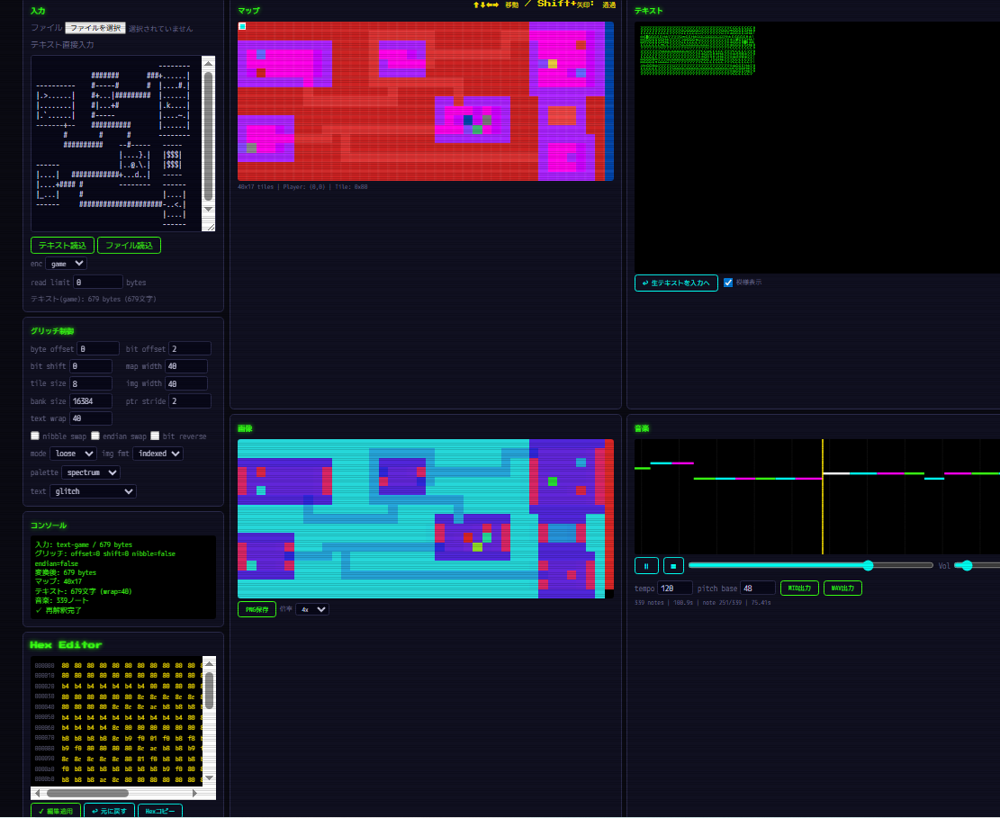
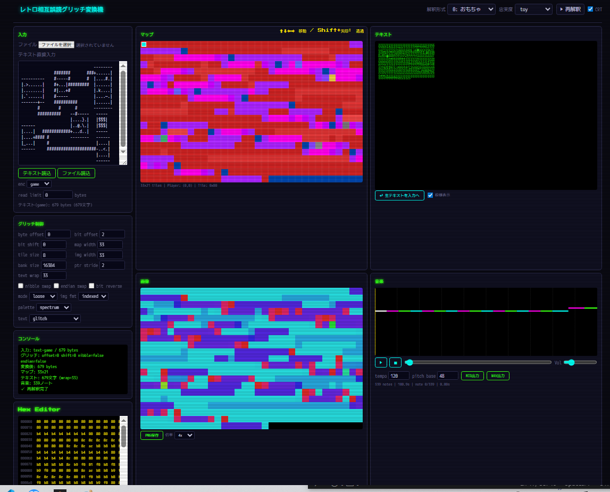
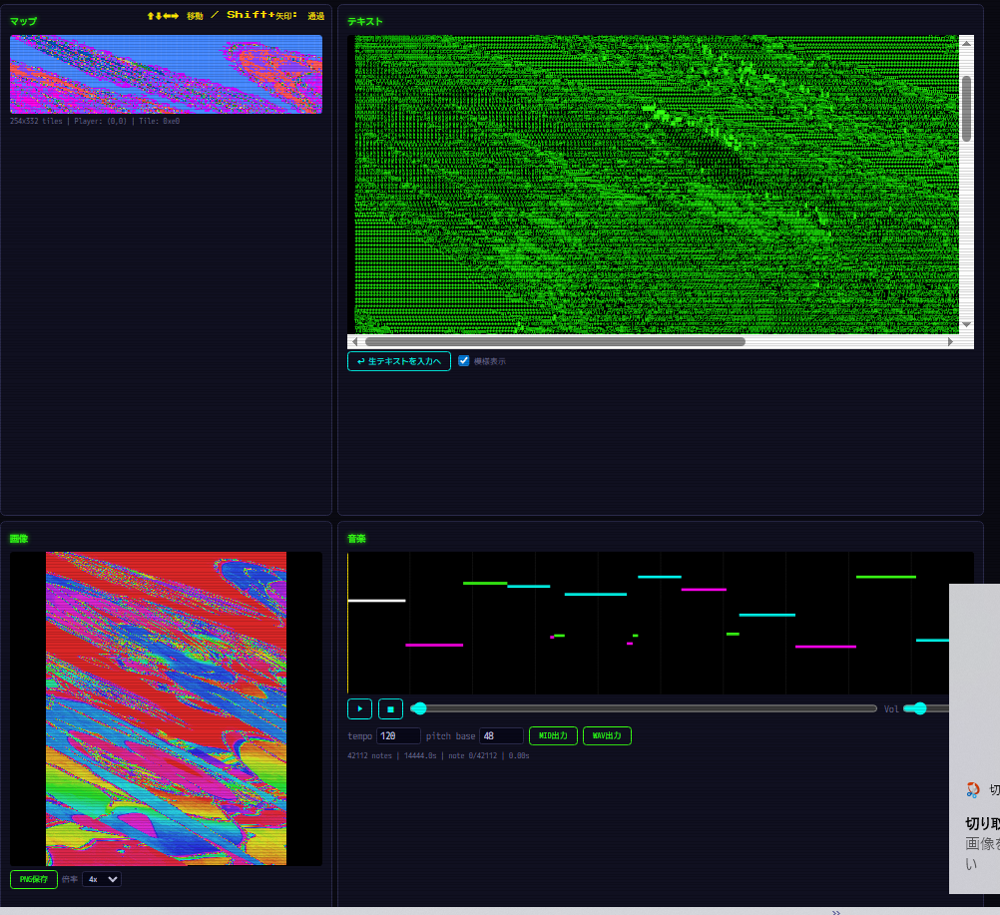
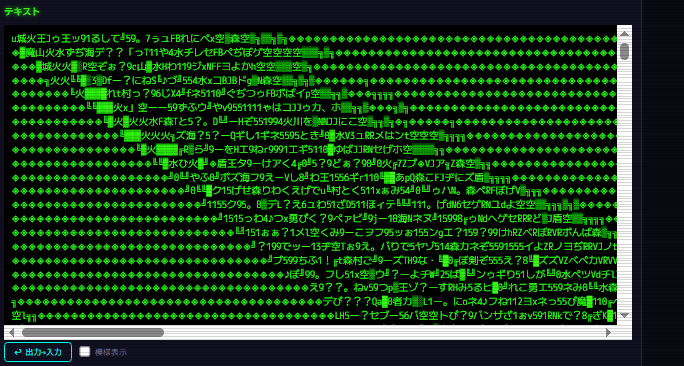
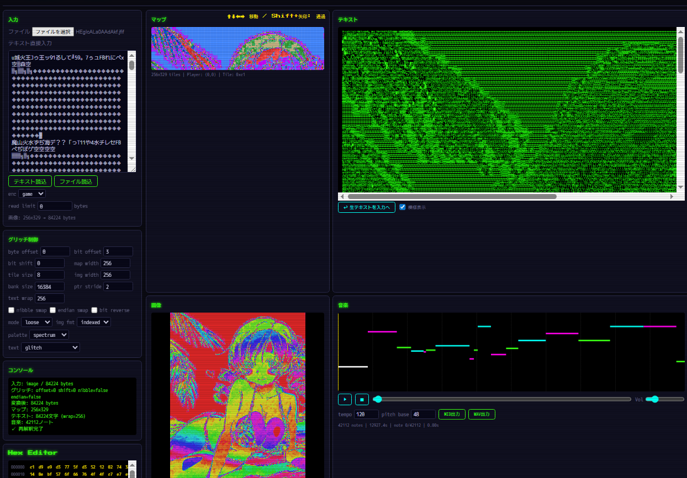
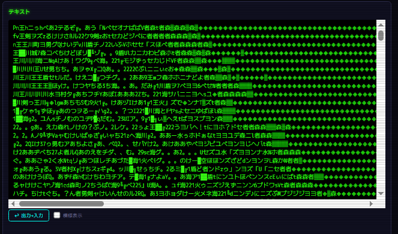
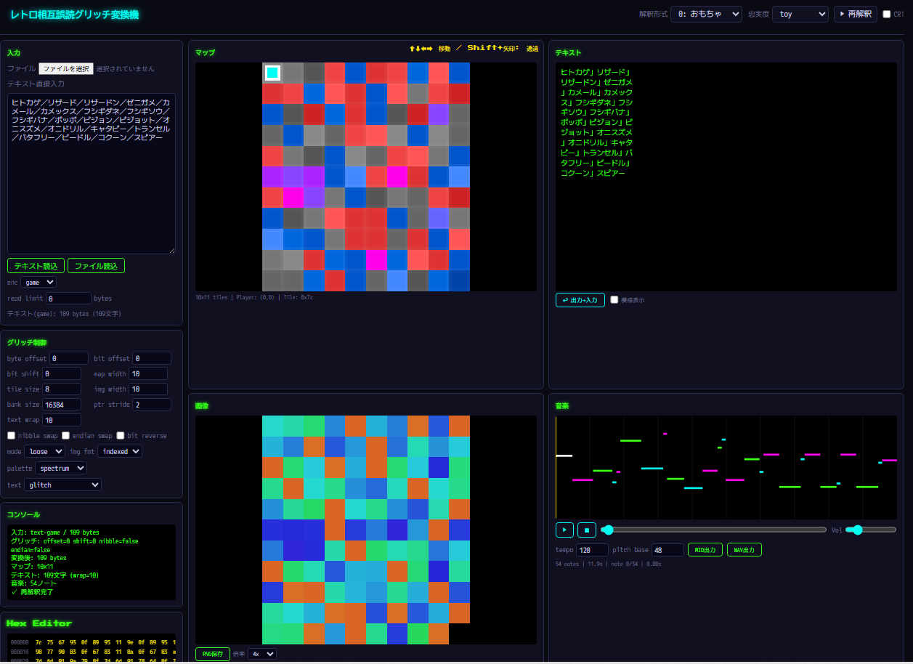

←2025年 2027年→
はじめに
よく見つけましたね！
日記ページで、[a]+[b]を押しながら[Enter]でここに来られます。
わざわざ表に書くようなことでもないこと（怪文書寄り？）をこっちに書いていきます。
2026年6月3日
雑談
- ハイパースペースってよく聞くけどあれって何？
- 紙の上の2点を紙を折って近づける近道空間、あるいは物理法則が違う空間。スターウォーズ。
- スタートレックはワープとかサブスペース。
- 時空のバルク。
- インターステラーのブラックホール
- ハイパースペースっぽい雰囲気はあるよね。
- ホログラフィック原理（ある領域の中身の情報は、その境界面に符号化できるかも）を示唆しているかもしれない。
- ハイパースペースはもしかしたら、「通常時空の全履歴が圧縮記録された因果境界層かも？ 超光速航行はもしかしたら履歴の索引層の移動かも……
- 高次元バルクって？
- 我々の宇宙を「3次元空間＋時間の膜」、つまりブレーンだと考えた時、それが埋め込まれているより高次元の空間のことをバルクという。
- 重力子をうまく操作できるようになるなら、重力波・重力子ビームを高次元方向へ漏らすことで、高次元ソナーのようにしてバルクの形・広さ・曲率・境界条件を推定できるかも。
- 大きさ：余剰次元が丸まっているなら、その半径や周期
- 形：余剰次元は円？ 複雑な多様体？
- 曲率：バルクが曲がっているなら重力波の伝わり方や戻り方に影響があるかも
- 境界条件：奥に別のブレーンはあるのか？ 端はあるのか？ 無限に続くのか？ 重力だけが反射してくる壁などがあるかも？（もしかしたら、高次元に隣の宇宙があるかも……）
-
カルツァ・クラインモード……余剰次元がもし小さく丸まってるなら、そこを振動する場には追加のモード（倍音みたいなもの？）が出ることがある。余剰次元が円なら、その円周に合う波長しか許されないわけで……。ざっくりいうと、高次元方向の運動量が、4次元世界では「重い粒子」に見えるかも。高次元方向に揺れた重力子が、こちら側では別種の重い重力子のように見えるかも。
- 高次元ブラックホールとかあるらしいよね。ブラックリングとかブラックサターンとか。
- 5次元では、地平面のトポロジーが\(S^1 \times S^2\) みたいになれる解がある。ブラックリング。
-
余剰次元があると、重力場は高次元にも振動できる。もし余剰次元がコンパクト、つまり例えば小さな円のように丸まっているなら、高次元の波は離散的な振動モードを持つ4次元から見ると、それが質量を持った重力子の塔、カルツァ・クラインモードとして見える。
-
ただ恒星サイズは難しそう。というのは、余剰次元が恒星サイズで効くなら、重力や天体運動に大きな異常が出るはずだからだ。既存の観測においては、重力は大きなスケールでかなり4次元一般相対論らしく見えている。もしあったら、降着円盤の形、重力レンズ像、ブラックホールシャドウの円形からの崩れ、合体時の重力波がカーブラックホールと違う、など……。ブラックリングの場合はかなりズレが出て来そう。
- 加速器サイズならマイクロブラックホール（寿命 \(10^{-27}\) 秒ほど）、実験室サイズなら短距離での重力の逆二乗則のズレとして検知可能かも。
- 場所によって5次元方向が広いということはあるのだろうか？
- じゅうぶんあり得る。余剰次元の幾何が場所ごとに違う背景場として存在することになる。
- もし余剰次元が小さな円 \(S^1\) になっているとして、その半径を \(R\) とする。この \(R\) が宇宙のどこでも同じなら、5次元方向の広さは一様である。だが、もし場所によって \(R =
R(x,t)\) のように変わるなら？
- こうしたものはモジュライ場とか、特に全体の大きさに関わるものはラジオンと呼ばれる。（後述）
- もし5次元方向の広さが場所によって変わるなら？ 重力の強さ、カルツァ・クラインモードの質量、粒子の相互作用が場所によって少し変わる可能性がある。第五の力のように見えることもあるかも。
- Randall-Sundrum型のような warped extra
dimension（曲がった余剰次元）では、余剰次元方向に沿って、時空の尺度そのものが変わるような構造を考える。これはAdS/CFT対応（量子臨界点における量子多体系と負の宇宙定数を持つ空間における重力理論が等価≒重力無しの2次元平面の物理が、重力ありの3次元宇宙の物理と対応する）的な解釈とも関係づけられる。要するに、5次元方向の奥に行く程、エネルギースケールが変わる。
- モジュライ！
- 同じ種類のものを分類する時に残る、本質的な形の違いを表すパラメータ。
- 例えば平面上の円は、 \((x-a)^2 + (y-b)^2 = r^2\) で表されるが、「平行移動して同じなら同じ円と見做す」という規則上では、中心位置 \(a,b\) はどうでもよく、半径 \(r\)
のみが円の違いを表すことになる。このとき、 \(r>0\) が円のモジュライである。この場合、円のモジュライ空間は、ざっくり \(\mathbb{R}_{>0}\) となる。
- トーラスの場合は？
太いトーラス、細いトーラス、斜めにつぶれた格子から作ったトーラス、正方形を貼ったトーラス、平行四辺形を貼ったトーラスみたいに色々ある。特に複素トーラスは、平面を格子で割って作る。\(\mathbb{C}/\Lambda\)
この \(\Lambda\) の形が変わると、トーラスの複素構造が変わるわけで、この格子の形の違いがトーラスのモジュライだ。
- ざっくり言えば、多様体の変形踊り。
- ダブルトーラスの場合、「種数 \(g\) の閉曲面は、\(3g-3\) 本の切断線によって、 \(2g-2\) 個の「パンツ」に分割される。（種数 \(g\) の閉曲面のオイラー標数は \(\chi =
2-2g\) 、パンツ一枚のオイラー標数は \(\chi = 2-3 = -1\) なので）このパンツの切断曲線の長さ \(l_i\) と、切断曲線のねじれ \(\tau_i\)
によってモジュライが出てくる。ダブルトーラスの切断曲線は先ほどの通り、3本になるので、合計6個のパラメータを持つことになる。これをFenchel-Nielsen座標という。種数が上がれば、9個、12個……となっていく。
- リーマン面、複素多様体、カラビ・ヤウ多様体、ベクトル束、接続、計量みたいな幾何対象を分類する時に、「同じと見做せるもの」を潰して、残った本質的な違いを並べるのがモジュライ空間。
- モジュライ空間自体が、多様体・代数多様体・スキーム・スタックのような幾何的対象になることがある。
- タイヒミュラー空間についても。
- モジュライ空間を延長したもの。曲面に入れられる複素構造や双曲構造を、同じものを同じと見做しつつ、印をつけより丁寧に区別した空間。
- 最初に基準となる曲面 \(S\) を用意する。そこに別のリーマン面 \(X\) を対応させるとき、 \(f:S\rightarrow X\) という写像も一緒に持って、その上の点を \((X,f)\)
とする。これがタイヒミュラー空間上の点。ざっくり、基準曲面から変形後曲面への対応表を持っていると思うのがいい。
-
タイヒミュラー空間には写像類群という群が作用し、これは「曲面をぐにゃっと自己同相で動かす操作を、連続変形で同じものは同じと見た群」である。この写像類群でタイヒミュラー空間を割ると、モジュライ空間となる。$$\mathcal{M}_g=\mathcal{T}_g/\text{Mod}_g$$
- トーラスの場合は、\(3g-3\)
を考えると0になってしまうが、トーラスにも複素構造のモジュライがある。上半平面$$\mathbb{H}=\{\tau\in\mathbb{C}\mid\text{Im}(\tau)>0\}$$で表される。格子
\(\Lambda = \langle1,\tau\rangle\) を使って \(\mathbb{C}/\Lambda\) を作る感じで。この \(\tau\) がトーラスの形を表すが、\(\tau\)
には$$\tau \mapsto \frac{a\tau+b}{c\tau+d}$$のような変換で同じトーラスを表すものがあるため、モジュライ空間ではさらに同一視される。
- モジュラー変換やんけ。\(1, \tau\) という基底の代わりに、\(a\tau+b, c\tau+d\)
といった別の整数線型結合を基底として選べるのだが、その新しい基底で片方を1に正規化しようとすると、これが出てくる。
- 要するに、上半平面 \(\mathbb{H}\) の一点 \(\tau\) はマーキングつきトーラスを表し、モジュラー群で動かした先の \(\tau'\) は、同じ複素トーラスを別の基底で表したものだ。
- タイヒミュラー空間上で同じ点と見做す条件は、二つのマーキング付きリーマン面 \((X,f) , (Y,g)\) の間に双正則写像 \(h:X \rightarrow Y\) があって、 \(h \circ f\)
と \(g\) がホモトピック（つまり連続変形で同じ対応にできる）な場合である。
- 物理の対称性と関係がありそうだよね。
- 場の配位全体の空間があるとする。ゲージ変換で移りあう配位は、「同じ物理状態」と見做すことにする。すると、 \(場の配位空間 / ゲージ対称性\)
が物理的に異なる状態の空間となる。これはまさにモジュライ。実際、ヤン・ミルズのインスタントンとか、モノポールとか、カラビ・ヤウの複素構造とか、真空とか、弦理論のコンパクト化とか、それぞれにモジュライがある。
- 並進対称性にモジュライがあると考えられるか？ 例えばソリトンが x=0 にあるか、x=a
にあるか。このaは、ソリトン解のモジュライとなる。並進対称性があるから、位置という自由度が生まれる。物理ではこういうものを「ゼロモード」と呼んだりする。
- 物理の対称性にはざっくり二種類あり、冗長性の対称性と、実際の物理的対称性がある。前者は単なる表現の違いで、配位/ゲージとかはこれ。後者は実際に別の位置の解となり、ソリトンの位置などがこれの例。
- 割って本質を取り出すと言われると、ホモロジー群とかも思い出す。
- 自然な連想である。境界を無視し、穴として残るものを取り出す操作だから。$$H_1 = \frac{\text{ker}\partial_1}{\text{im}\partial_2}$$
- モジュライ空間にもホモロジーを考える場合がある。
- 位相幾何、「ホモトピー全体の空間」とか入れ子で考えがち。とかやっているといつの間にか ∞-groupoid みたいな話になってる。この辺の話を型とかに入れると、例のアレ……HoTTみたいなことになっていきますね。
- タイヒミュラー理論って？
- 曲面の形の変形を、距離・複素構造・写像類群の作用まで含めて研究する。
-
タイヒミュラー空間については少し見てきたが、その空間について、どんな座標で表せるのか、どんな距離が入るか写像類群がどう作用するか、モジュライ空間との関係はどうか、曲面上の閉曲線の長さがどう変わるか、曲面を変形したときどこまで歪ませずに写せるか……などを見る。
- 曲面 \(X\) を曲面 \(Y\) に移すとき、最小でどれだけ伸び縮みのひずみが必要か？
を見る。これが「タイヒミュラー距離」。完全に等角（つまり角度を保てる）なら、同じ複素構造である。だが、一般にはダメ。擬等角写像みたいなものが出てきたりする。
- 複素解析、双曲幾何、低次元トポロジー、力学系、代数幾何、数論幾何、弦理論、モジュライ空間論……などに出てくる。色んな分野の交差点だ。
- スキームについても。
- 方程式の解集合を、環と素イデアルを使って作り直した幾何空間。普通の代数幾何では、たとえば \(x^2 + y^2 = 1\) みたいな方程式の解集合を図形として見る。だがスキームでは、もっと根本から、環
\(A\) から空間 \(\text{Spec}(A)\) を作るということをする。
- 各点はざっくり言えば環 \(A\) の素イデアルだ。整数環 \(\text{Spec}(\mathbb{Z})\) の点には、\((2),(3),(5),(7),\dots\) のような素数に対応する点がある。
- なぜそういうことをするのか？
- 普通の幾何では実数や複素数の解集合を見ることが多いが、数論では整数係数の方程式を考えたい。
- \(x^2 +y^2 = z^2\) とか、\(y^2=x^3+ax+b\) のようなものについて、実数上、複素数上、有理数上、有限体\(\mathbb{F}_p\)
上、整数全体……などで同時に扱いたい。スキームはそのための言語だ。
- モジュライ空間はある種類の幾何対象を分類する空間だったが、分類したい対象が代数的なものなら、そのモジュライ空間自体も代数幾何的に作りたい。
- 楕円曲線のモジュライ、代数曲線のモジュライ、ベクトル束のモジュライ、アーベル多様体のモジュライ、カラビ・ヤウ多様体のモジュライ……これらをただの集合ではなく、スキームやスタックとして作りたい。
- 楕円曲線はざっくり、\(y^2 = x^3 + ax + b\) みたいな方程式で表される（ただし判別式 \(\Delta \neq 0\) で特異点がないもの）。ここで \(a,b\)
を動かすと、いろんな楕円曲線が出る。ただ、座標変換で同じ楕円曲線になるものもあるので、同じものは同一視したい……モジュライの出番だ。複素数上なら、楕円曲線は複素トーラス \(\mathbb{C} /
\Lambda\) としても見ることができ、その形は \(j-\)不変量でかなり分類できる。
-
ただし、モジュライ空間は、いつでも普通のスキームになるわけではない。「同型なら同じ点」と潰すだけだと、その対象がどんな対称性を持っていたかが消えてしまう。そこで、スタックが出てくる。すごく雑に言えば、点としての対象を持つだけでなく、その対象たちの間の同型や自己同型まで覚えているモジュライ空間だ。
- スキームが素イデアルを点として集めるというのは？
- 具体的には、「その点で何が0になるか」という情報を集めている。通常の平面上の点 \((a,b)\) を考えて、多項式環 \(k[x,y]\) を考える。つまりここには多項式、関数たちがあるのだけど、この
\((a,b\)) で0になる多項式を全部集めると、$$(x-a, y-b)$$ というイデアルになる。たとえば \((2,3)\) なら、\((x-2, y-3)\) だ。これは、\(x=2, y=3\)
で消える関数全部を表す。\((x)\) なら、 \(x=0\) という直線全体を表す。\((0)\) なら、平面全体の一般点を表す。
- 素イデアル \(\mathfrak{p}\) は、\(fg \in \mathfrak{p}\) なら、 \(f \in \mathfrak{p}\) または \(g\in\mathfrak{p}\)
となるようなイデアルだ。幾何的には、積 \(fg\) がその場所で0になるなら、\(f\) か \(g\) のどちらかがそこで0になるという性質。
- 点に残っている情報はざっくりこう。
- 1:その点で0になる関数。\(f\in\mathfrak{p}\) なら、関数 \(f\) は点 \(\mathfrak{p}\) で0になる。
- 2:その点で0でない関数。\(f \notin \mathfrak{p}\) なら、関数 \(f\) は その点では0ではない。これによって、基本開集合 $$D(f) = \{\mathfrak{p}\mid
f\notin\mathfrak{p}\}$$が定義される。つまり、開集合は、「この関数が消えない領域」で作られる。
- 3:その点の近傍で見える関数。点 \(\mathfrak{p}\) の近くでは、\(\mathfrak{p}\) に入っていないものを分母にしてよい。これが局所化 \(A_\mathfrak{p}\)
だ。「その点で0でない関数は割って良い、なぜなら分母が0にならないから」。
2026年05月25日
近況
- Ubuntuから起動するとVSCodeでLive Serverがうまくいかないのが気になるので、
# mizuhara_hp: open file path as local PHP server URL
openpub() {
local PUB_ROOT="(ページのパス名)"
local PORT="8000"
if [ -z "$1" ]; then
echo "Usage: openpub （ページのパス名）/path/to/file.html"
return 1
fi
local INPUT_PATH="$1"
# 相対パスが来た場合は絶対パス化
if [[ "$INPUT_PATH" != /* ]]; then
INPUT_PATH="$(realpath "$INPUT_PATH" 2>/dev/null)"
fi
# pub配下かチェック
case "$INPUT_PATH" in
"$PUB_ROOT"/*)
;;
*)
echo "Error: path is not under pub root:"
echo " $PUB_ROOT"
echo
echo "Given:"
echo " $INPUT_PATH"
return 1
;;
esac
# pubからの相対パスに変換
local REL_PATH="${INPUT_PATH#$PUB_ROOT/}"
# URL用に日本語やスペースをエンコード
local ENCODED_PATH
ENCODED_PATH=$(python3 -c 'import sys, urllib.parse; print(urllib.parse.quote(sys.argv[1].replace("\\", "/")))' "$REL_PATH")
local URL="http://localhost:${PORT}/${ENCODED_PATH}"
echo "Opening: $URL"
powershell.exe -Command "Start-Process '$URL'" >/dev/null 2>&1
}
- という関数を足して、別タブのUbuntuから
openpub （絶対パス） で編集中のページを見られるようにした。ChatGPT5.5、ありがたや。（しかしif
に対する fi は見たことあったけど、case を閉じる時は esac なんだな……）
- 自分用のコマンドまとめをどこかに書いておいた方が良さそう。mdでいいんだけどさ。機密漏洩してもいやだし。
- 表に書けるようなことをしていなかった。定期報告のアシストとか、実家の祖母の病院とか何やら。プラグマタもう少しでクリア。
- 「ヴィラ・螺子」周りの設定詰めをしたり何やら。
- やろっかなーみたいなことリスト
- 「ヴィラ・螺子」世界線の設定まとめ（特に脳髄塔あたりは気に入っている）
- 音楽Webアプリ（ファーニホウ・プチマシン）
- Haskellやりつつ「ヴィラ・螺子」のコマンドをまとめる（数字階）
- 自己紹介を書く（結構濃いめになりそう）
嘔吐イラストプロンプト
質感
{{{{{vomiting, vomit liquid, lots of vomit splashes from girl's mouth,
detailed vomits which containes A fine, green , orange and white rice bran texture.
{{{{{girl nears face and vomits to me, Vomit spurts violently from the girl's mouth,
landing irregularly on various parts of the camera lens.
The droplets splatter cover about one-third of the entire illustration in a speckled pattern,
severely blurring the foreground, but the contents are vaguely visible.}}}}},
vomits bounce on viewer and detailed vomits which containes a fine green , orange 3D texture}}}}},
rice bran（食糜、を変換したらこれになった。逆変換すると「米ぬか」になる）が質感によく利く。
シチュエーション
{{{{{A toilet interior, ceiling,
looking up from toilet bowl like An angle that looks like a hidden camera shot from inside the toilet bowl.}}}}},
- トイレに向かって吐いてくれます。妹のゲロを浴びたい時だって私にもある（不健全だよ……）
2026年05月20日
空想 - 異界帯広螺子前線
一彌「Haskellを勉強して、ヴィラ・螺子のCLIゲームがそれなりのところまで出来たら、次は『ヴィラ螺子型盤面』を搭載した敵を、一埜が射撃、こにゃんがハッキングするゲームもいいかもな！」
一埜「お兄ちゃんは？」
一彌「……敵！」
兄型螺子体「ヴァー」
こにゃん「ンニャアアア！（ハッキング）」
一埜「妹パンチ！（ドゴォ！） ヘッドショット！（バンバン！）」
兄型螺子体「痛い痛い！ やめろォ！
……そうだ！（ハッキング）」
兄型螺子体「（頭が小さくなる）」
一埜「ずるい！💦」
一彌「という兄型螺子体α～Ωが、ザコ敵としてステージ内のあちこちに配置されており……一埜とこにゃんは、異界化した帯広市を正常化するために奮闘するのだ！」
一彌「戦闘はコマンド型アクティブタイムバトルRPGまたはシューティング+Witnessっぽいパズル（こにゃんがハッキングして装甲を一時解除）+CLIパズル（こにゃんが兄のソフト面を剥がしていく）！
CLIモード中は一埜の攻撃自体もCLIコマンドで実行！ 一埜の銃『妹シューター』はナビカスっぽくテトリミノっぽいものを敷き詰めて強くなる！
なんなら妹シューター内の空間も無限に広くなっていったりして、グライダーガンっぽくナビカスミノが再生産されるようになり、インクリメント要素も……！」
一埜「おかしい！ おかしい！💦」
一彌「アクションっぽく考えるなら、一埜操作中は、
- 矢印キー：移動
- Z : 妹シューター射撃
- X : サブウェポン（妹パンチなど）
- Shift : 注目（こにゃんのハッキングも作動）
- Shift+Z : ロックショット（狙って撃つ）
- Space : ジャンプ
- Shift+WASD : こにゃんによるWitness風パズル
Witness風のハッキングパズルを解いてから、再度Shiftを押すと、こにゃんによるCLI操作だ！ この場合も、Shiftを切ると一埜は動ける！ あるいはこのタイミングで shoot
を押すと、ロック中の相手を一埜が射撃する！ shoot 20 とかも有効だぞ！ まあ弾数はナビカスで上限が極められてるけどな！」
一彌「あとあらかじめコマンドや関数を定義しておける……だからCLI内は実際のヴィラ螺子よりもさくさく動けるぞ！ alias cdshoot . = shoot 20 && cd .
とかで、移動しながらシュートとかも設定できるぞ！ ……ま、まあ、真面目な表記はもうちょっとパソコンに詳しくなってからかな……」
一彌「そして兄型螺子体は、それなりにパズルやCLIを操作できるように、いい感じにウェイトタイムも用意する……放熱期間だ！
それがないとオーバーヒートするんだ。ヒートゲージを持っていて、いいタイミングで無理やり行動させると、いい感じに動きが止まるぞ！」
一埜「結構面白いんじゃ？」
こにゃん「ハァン（でも要素が多いわ……）」
一彌「敵の内部にもナビカスみたいなものがあり、それを機能不全にする要素があってもいいかもな！」
一埜「終わらなくなる！💦」
（※R18G注意）StableDiffusionで嘔吐イラスト生成
(lots of vomit splashing from girl's mouth, vomit on floor, detailed vomit:1.6)
<lora:melxen_vomiting_5:1.0><lora:detailed_vomit_melxen:1.0>
これ以外のぶっちゃけプロンプトはほぼなんでもよくて、持ってる画像に、
Checkpoint == jfCU, jfCopperAlchemy
VAE == anything-v4.0.vae.pt
Denoising Strength == 0.40 ~~ 0.55
くらいの感じでやってあげればヨシ。
- 吐かせるくらいなら今ならNoobAI系なら全然追従します。
- あとはガチャりつつレタッチを楽しみつつやっていけばそれなりに。
- VAEが壊れてるとゼンゼンだめになるので注意すること。
2026年5月11日
問題（半）解決ログ
- 問題：急にPCからGelbooruにアクセスできなくなった。同じWi-Fiを利用しているスマホからは普通にOK。
- PC側で確認したところ、Google Public DNS（8.8.8.8）では
gelbooru.com の名前解決に失敗し、SERVFAIL が返っていた。
- Cloudflare DNS（1.1.1.1 / 1.0.0.1）に変更したところ、PCからは閲覧できるようになった。
- Windows 10の場合
- 設定
- ネットワークとインターネット
- アダプターのオプションを変更する
- 使っている接続、たぶん イーサネット を右クリック
- プロパティ
- インターネット プロトコル バージョン 4 TCP/IPv4 を選択
- プロパティ
- 次の DNS サーバーのアドレスを使う を選択
- 入力：
優先 DNS サーバー: 1.1.1.1
代替 DNS サーバー: 1.0.0.1
- OKで閉じる
- その後：
ipconfig /flushdns
- おそらく一時的なものだと思われるが……？
2026年5月1日
近況
- 仕事が30件も来た。いつものことながらゴールデンウィークどころではないのだが、まあ良し！
- 起床時間が落ち着いたら江別に緑色の桜（御衣黄）でも見に行こうかと思っているのだけどどうだろうね。
- コナン新作とマリオ新作映画も見たい、あとプラグマタを続けてやりたい。
- 圏論の図式エンジンを作ったのはいいのだけど、改変すると多分遡りで変わるので、バージョン管理しつつかな。
- Homology Observation Machine ## ὁ ##（なお気息記号つきのオミクロンは0x1F41）が
面白いので、高次元化したりしてみたくなってきた。図鑑を作りたい。
- イデアル計算機も作ったりしてさ。
- 限定された操作から「ヴィラ・螺子」を攻略する、CLIっぽいテキストゲームがあったら面白いのではないか。だんだん出来る操作が増えてくと。
- 11時ごろに祖母の薬を取りに行く。
- 06:00。頭痛オブザイヤー。カロナールを飲んだけどまだ効いてこない。
2026年4月30日
ヴィラ・螺子
- ピラネージのもじり。
- たまたま今回の周回では肉体の調子が良かった一彌が、運送業のバイトを試み妹のためにパソコンを買おうとする。
- 初日当たったマンションが「ヴィラ・螺子」。
- 異常マンション。外観はだいたい5階くらいに見える。
- 3階がパラペット屋根なのに、その上に4階5階と続いていたりする。
- 5555階などに運送しなければならず。
- 「どれだけエレベータ乗るんすか！？」
- 「ばっかお前、日が暮れるぞ。……そっか、初日だったもんな。よし、この階段だ」
- という感じで、\(\omega\) 階だの \([2,[3,4]]\) 階だの
\(\text{apple}\) 階だの
わけのわからないところを大量に配送。「途中通る\(\text{appl}\)
階の住人は気難しいからな、見かけたら元気よく挨拶！」
- 「一彌君、真面目だね！ 君なら出来るよ」と褒められた瞬間に、先輩が怪異に連れ去られる。
- 営業所の所長に慌てて伝えたところ、
「実はヴィラ・螺子に配送できる人員が今いなくて……ヴィラ・螺子を彼の他に体験したのは君だけだ、一彌君！」
「彼はそう簡単に命を落としたりはしないだろうが、どうか配送をしつつ、彼の足跡を追って欲しい！ 給料弾むから！」と依頼（丸投げ）される。
- あまりにヤバい状況に、マンションの分譲を行っている不動産業者に独自に頼みに行くと、「現在階層」がわかるアプリと「色んな色に光る石」を貰う。
- 配送している内に、段々とマンションの構造や住人の生活が分かってくる。型をうまく移動しつつ目的の階へと進む！（石は型を表す）
- 5555階に行くために先輩が通った経路は、\(5 \rightarrow 55 \rightarrow 5555
\) という、文字列型の複製。
- 数字階は、文字列階の住人から「文字列長」関数によってハブ扱いされていたりする。
- 順序数型（例：\(\Gamma_0\) 階）だったり、
「p進整数」型（例：\( \cdots 55555 \)階）だったり、
「順序数文字列」型（例：\( (\text{apple})^\omega \text{++} \text{a} \)
階）だったり……
- とかなんとかやっている内に、愛しの妹の一埜がマンションに迷い込んでしまう。
- 一彌は妹を助け出すために、むしろ入居することを決意！ 他社配送業者と情報交換したり、関数型や混型への配送、怪異の撃退についてもプロになり、やがて先輩と妹に出会う……！
- 先輩が妹を保護しつつ、妹は住人に可愛がられているのでした。
一彌はエンドレスモードでバイト！ 住人の信頼を得れば、管理組合に加入できるかも……！？
近況
2026年4月19日
近況
- 忙しかったのか妙に時間が飛んだ気がする。土曜日はほとんど寝て過ごしてしまったし。
- Antimatter Dimensionsは、Replicantiに入った。Galaxy, Infinity, Replicantiと脚韻を踏んでいるようだが、
replicantusというラテン語があるわけではない。replicōという単語があり、
これは「折り返す・折り曲げる・曲げる・（巻物を）広げる・（ロープなどを）ほどく、考える、熟考する」。
- 与えられた画像を数式表現するものがあったら面白いのかもしれない。
2026年4月20日
近況
- YouTubeのニュースコメントというのは読んでいて気分が悪い。やはり隠遁こそが正義。
- デカい家に婿入りしていってそこで冷遇されるって、男女入れ替えたら結構キツいと思うな。
- 無理せず別れちまえば良かったんだよ。でもバツ2はキツいかな。そうかもな。
- というわけでRSSを入れてみたのだ。
- なんか謎に腸にガスが溜まっている。
- RPGの戦闘処理をガッツリ作るために、デバッグモードを実装する必要がある。
- Antimatter Dimensions、そろそろEternityが見えてきたな。
2026年4月14日
近況
- ✅τ を更新。今後は、
- ダンジョンクリア報酬：冒険ポイント、経験値、秘境っぽい風景、思い出、攻略完了カウント+1
- 装備品：武器と防具のみ。まずは装備屋
- 状態異常の追加（モンスターにも定義する）
- 睡眠（sleep）：睡眠中は行動不能。ダメージを受けると起きる。
- 一彌が睡眠：一彌「( ˘ω˘)ｽﾔｧ」一埜「起きてよ～！💦」
- 一埜が睡眠：一埜「むにゃむにゃ、食べられないよ～」一彌「起きてくれ～っ！💦」
- モンスターが睡眠：モンスター「ZZZ……」一彌「チャンスだ！」一埜「うぅ、ちょっとかわいそう！💦」
- 麻痺（paralysed）：そのターンは行動不能。毎ターン決まった割合で回復する。
- 一彌が麻痺：一彌「しびびびびばばばばぼぼぼ」一埜「お兄ちゃん！？💦」
- 一埜が睡眠：一埜「あぶぶぶ……」一彌「一埜～っ、大丈夫か！ 君の痺れすらも愛おしい！！」一埜「ら、らりいってれんろぉ（な、何言ってんのぉ）……！💦」
- モンスターが麻痺：モンスター「あばばばば」一彌「よしっ、麻痺したぞ！」一埜「うぅー、ごめんね！💦」
- 暗闇（blinded）：攻撃行動の失敗率が上昇。
- 一彌が暗闇：一彌「一埜の可愛い顔が見え～んっ！💦」一埜「言ってる場合か！💦」
- 一埜が暗闇：一埜「うわーっ、いきなり夜になった！？💦」一彌「違うっ、目薬を差せ！💦」
- 恐怖（scared）：一定割合で敵対的行動失敗。毎ターン決まった割合で回復する。
- 一彌が恐怖：一彌「ヒィェァァァ！💦」一埜「落ち着いて！💦」
- 一埜が恐怖：一埜「うわぁぁん怖いよ～～っ！💦」一彌「落ち着けっ！💦」
- 混乱（confused）：一埜のみ。兄を攻撃する。リミット技も容赦なく兄に放たれる。
- 一埜が混乱：一埜「はれら……？」一彌「ヒェ……ッ！？💦」
- 恍惚（dazed）：一彌のみ。妹に関するフレーバーテキストを生成。
- 一彌が恍惚：一彌「おぉぉ一埜よ！ 君の笑顔は神のもたらす秋露のごとく神聖なる恩寵として我が世界に降り注ぐ！」一埜「落ち着いて！💦」
- 石化（petrificated）：ほぼ戦闘不能と同義。二人で石化すると敗北、パンになって小人さんに連れ出される（攻略失敗）。
- 一彌が石化：一彌「うガギ……！？（石化）」一埜「お兄ちゃ～んっ！？💦」
- 一埜が石化：一埜「うぁっ、お、お兄ちゃっ……（石化）」一彌「おぉぉぉ、一埜……！💦 ……石になっても可愛いな」一埜「（言ってる場合か～～～っ！💦）」
- 吐き気（nausea）：たまに嘔吐し1ターン行動不能+ダメージ+「ゲロゲロ」を生成。床の状況の変化。本人と仲間の反応。料理（後述）に応じて生成時メッセージを工夫。
- 一彌が嘔吐：一彌「ヴォエ！」一埜「うぎゃー、汚ったな！？💦」
- 一埜が嘔吐：一埜「げほっ、ぉぇ……！」一彌「大丈夫かーっ！💦」
- モンスターが嘔吐：モンスター「オエエエ！💦」一埜「ぎゃああ吐いた！💦」一彌「足元注意だぞ、一埜！」
- ローグライト的に手に入るアイテム※その冒険のみ。巻物、杖など
- モンスターデータの精密化：（経験値、魔力・魔法防御力を導入）（めんどい～）
- アトリビュートの固定化を外す：アトリビュート付きは出現率1/3とする。代わりにレベルで強さを保証
- 「庇う」と「回復」のレベルと発動率、リミットの獲得率。
- ボスキャラの導入：ガンナーベア、ウハギンなど
- モンスター特殊技の導入：全体攻撃とか
- フィールドの床状況：水？ 酸？ ポーション？（撒かれたポーションは気化ガスから10%効果を毎ターン生成）
- ダンジョンレベルの想定：デバッグモードの導入、レベルを見つつ「遠足」なら遠足らしく勝てるように
- 料理システム：食材登録して料理を作って回復！ 食材の数の回数だけ回復できる。食べたものは「胃袋」にスタックされ、嘔吐時に内容物が描写される。
- 色、におい、内容物など、料理依存。
- モンスターにも定義されている。ヘンなモノを食ってる。リアルな感じに。
- 追加階層：各ダンジョンの奥にある更なる階層。
遠足が10階までだとして、追加で20階まで行けたり。（裏、と名前が付く。遠足裏、遠足裏裏……のように。）
- ダーク太陽：敵味方関係なく作用する。
- 魔法の導入：魔法は「魔法書アイコン+魔法名」、詠唱はサビラ語+セオレミウム語で作成。効果は表を作成済み。
- 修練所：アビリティを装備して覚えられるようにする。黒・白・時空魔法、投擲、異界術、かばう、追加攻撃、能力値破壊、建築、魔法剣、二人技、盗むなどなど
- 図書館：青魔法や様々なことの覚え方や使い方が書かれる。
- 投擲アイテムの追加：ダーツ、手裏剣、火遁術などの巻物、ゲロゲロ（毒・吐き気付与）。
- 追加ダンジョン：
- 幻影の城（たまに財宝あり。武器防具を揃えるならここ）
- 幻獣界：幻獣と戦って勝つと幻獣が認めてくれて、時々戦闘に乱入する。
- 闘技場：人間キャラとの戦い。うちの子とかを導入。倒すと住人となって街で時々喋る。時々戦闘に乱入する。
2026年4月2日
近況
* Done *
✅兄妹小話のページを作成。ワンクリックコピーボタン＋ハッシュタグを用意。
✅Materialのページを作成＋背景画像としての敷き詰めボタン。今後作られたタイルなどはここに蓄積。
* ToDo *
というわけで、重ためのプロジェクト三つをとうとう触っていく感じになりそうだ。
- 兄妹クリッカー：ダンジョン探索ありのクリッカーゲーム。
- バグRPG：OOBなどを要素とした、バグ技前提のRPG。
- ページのThe Witness化：風景パズル＋ボードパズル。風景パズルは
- ページ猫：
* 実行の為に *
これは、まず、
- 今持っているアイデアと懸念点の洗い出し
- 具体化するために何を決めなければならないのかの洗い出し
- 中途公開しても楽しそうな部分（簡単な成果）の洗い出し
が必要だ。
今持っているアイデア・懸念点
兄妹クリッカー
- 普段小話を作っている「水原一彌・一埜兄妹」を元にする。
- 基本は街で生産。初めは農産、それが徐々に工業化していくイメージ？
- おそらく、ゲーム開始時は兄妹は「焼け出された状態」から。
- サバイバルクラフトを抽象化した設備購入によって街が発展。
- 装備や能力が強くなっていくので、それでダンジョン探索。
- 発展と共に人口が増えていく。
- 住民にはリアルな血縁関係（不義密通や近親の子もあり）、経歴、トラウマ、性癖などを用意。
- 購入可能な設備は（転生する世界観もあり）宇宙とか時空とかを股にかけていく。途中から「設備21」みたいになっていき、これは名前の付かない設備。要するに無限に遊べる。バグっぽい名称を適当につけるのもいいかも。
- 時間経過でダンジョンに挑める。ダンジョン内ではパラメータが物を言う。
- が、パラメータが格上の相手に勝ったり、格下の相手に負けたりするのがRPGの醍醐味。
- 特殊能力を覚えたりして、勝ったり負けたりするのだよ。
- ダンジョンレベルというものがあり、出現するモンスターや難易度、風景のヤバさなどに影響する。とりあえず奥まで行くとボスがいて、何かいい感じのものがもらえる。
- ボスに勝った後に、更に潜ることも出来る（どんどん難易度が常識外れになる）
- もらえる報酬は、「より難しいダンジョンへの挑戦権」「特殊能力」「特殊な装備」「発明」
- 兄妹がダンジョンを荒らして血まみれで帰ってくる、というのはちょっと陰惨なのでやめたい。
- 敵も味方も、勝っても負けてもパンになるのである。勝ったらモンスターのパンをゲット、負けたら自身がパンになり、復活まで多少時間がかかる。
- あと、「モンスター側の知り合い」（ネームドモンスター）が生まれたりする。これは上記の住民の「経歴」システムに順じ、こいつらもこいつらで色んな経験を裏側でしたりする。
- ダンジョンレベルもクリッカー的に異様な伸びを見せてもいいと思う。
- クリッカーゲームは、伸び率と操作間隔が命だと思う。
- 着想）100万、10億とか行った数字は、ある種「死んでいる」と言える。
- 結局「買えるの？買えないの？」というブール値しか見てないことない？
- 着想）それはそれとして農場が10億個とかちょっと破天荒で面白くはある。
- 操作間隔は15分くらいを目安にする。クッキークリッカーは突き詰めると2分間隔。（ゴールデンクッキーの出現がそれくらい）
- ゴールデンクッキー要素はほどほどにして、「クリックしなくても貯まる」ものにするか。
- 面白い伸び率を見つけること。
- 可能なら異常な増加率を見せて巨大数スケール（矢印表記とかチェーン表記とかBEAFとか）に入っても面白いが、これはもう一段のジャンプを要するのでかなり後。
- なんせ、結局購入っていうのは引き算なのでね。
- 転生要素あり。
- 転生時、「その後、兄妹は末永く共に幸せに暮らしたのでした……」というメッセージと共に、転生画面へ。
- 転生後は「次の人生がより加速度的にすごくなるアップデート」を転生ポイントにより購入できる。
バグRPG
- 命令も内部状態もマップのOOBにあり、それらを破壊したりして遊べる。
- ゲームの状態自体はメタで持っておいて、落ちたら復活。
- Q. 能力値とかは？
- あまり意味がない。でもクソ強い妹を作って遊べる。
（アイデア）ミニゲーム。クソ強い妹に「妹パンチ」されて、秒間何ヒットか、兄が何メートル吹き飛んだかで遊べる。（兄はバカのシスコンなので吹き飛ぶほど妹の健康を讃え大喜びする）
- 敵の攻撃が理不尽なので、バグらせて戦うのが前提の難易度だと面白い。
（アイデア）あまりに強すぎる敵にぶん殴られて二人ともダウン、牢屋に入るが牢屋の壁が壊れていてOOBにアクセス……が導入とか。
- あと、わざと敵に負けることがイベント進行に繋がるとかも。
- どちらにせよこれは実に気の長い話になると思う。まずは普通に2Dゲームのマップを作れるようにするところから。
バグっぽい画面効果を得るために、英数字、ひらがな、カタカナもマップチップとして持つこと。
- マップチップを表示、配置しながら描画できるスクリプトが欲しい。すごく。
The Witnessっぽい仕掛けをサイト内のあちらこちらにつくる。
- 来訪者が解いた風景パズルはトップページに蓄積される。
- 風景パズルは「視点を変えるとパズルが現れる」ものなので、3Dでこそ輝くものなのだが、例えば「絵文字がドラッグドロップ可能で、絵文字が良い位置にあると線パズルとして繋がって成立する」とか。
- これは作るのがそもそも大変なので、「img2pzl」という、「写真からWitness風パズルデータを持った.jsonなどを作るツール」を得ることとする。
- それ以外に、ボードパズルをJavaScriptで遊べるようにする。
- ボードパズルのルール。
- 途切れた道：行き止まり。
- カラータイル：異なるカラーを一緒の領域にしない
- 黒点：通路上に定義されている。通ることを要求される。
- 対称パズル：始点が二つあって、選んだ始点と対称な始点からもう一つの経路が伸びる。選んでいる方の始点から伸びる先端は、他の経路をまたげない。（逆は可能）
- 取り消しタイル：領域内にルール違反を求める。ルール違反一つと対応して消える。消えなかった場合、回答を不正解にする。複数の取り消しタイルは、一つの違反に重複して対応できる。逆に、
- 星タイル：同じ色のタイルと対になる。3つではダメ。
- テトリスタイル：テトリミノとは限らないが、この形に領域を区切る必要がある。二つ以上のミノがくっついた場合は、組み合わせた形とする必要がある。
- 三角タイル：タイル上に描かれた△の数だけ、その周辺の経路が通過されている必要がある。三角が4つ以上の場合もある（解き方はヒミツ）
- ボードパズルのオルタナティブルール。
- 星タイル：2つ組みではなく3つ組ルール。
- 回転矢印タイル：そのタイルに隣接する経路を、少なくとも一回はその回転の向きの通りに通過しなければならない。逆向きに通過する経路があっても不正解にはならない。
- マインスイーパルール：数字の周りに爆弾があるように
- コイル点：始点からヒモが伸びており、経路の先端にくっつく。解答は、そのヒモがコイル点上を通過して折れ曲がっていなければならない（巻き付きの要請）
- 中抜き丸タイル：同じ領域内の何か（一番近くのタイル？）をコピーする？領域に他に何もないと解を不正解にする。
- コピーの優先順位とかはなし。「取り消しタイル」と同じで、「選ばれた領域から、クリアになるタイル」を選び出して解に導く。優しい奴。
- ただし、中抜き丸タイルは「色」を持っており、別のカラータイルになることは出来ない。
- 墨塗り丸タイル：中抜き丸タイルのタイルをコピー。こちらも色を持っており、別のカラータイルにはなれない。
- パンとおうちタイル：パンタイルの横を通って、おうちタイルの横を通らないと解にならない。
- パンとおうちが複数ある時は、パン、おうち、パン、おうちの順で通る必要がある。二つのパンを同時に持てない。
- パンとおうちは色を持つことができ、ある色のパンは、同じ色のおうちにしか持っていけない。黒いおうちは、オールマイティである。
- おうちマーク：おうちのもつ土地の面積を同じように区切る？ 同じ色のおうちは、同じ大きさに区切る？
- 丸つきテトリス：この形のミノが入る領域であればOK。
- プラスつきテトリス：この形のミノ複数個と見做せる。
- 矢印タイル：このタイル差す方向にあるすべての経路のうち、どれかを通る必要がある。また、書かれていない方向については、隣接する経路を通ってはならない。
- 途切れマークタイル：同領域内にある途切れた道と対応する。途切れマークは縦・横の属性を持ち、それぞれ縦方向の途切れ、横方向の途切れとのみ対応する。同数でなくてはだめで、多すぎるとバツ。
- 経路マークタイル：同一領域にある「同じ形状の経路」と一対一対応する。途切れマークタイルはこれの一種。
-
お化け点：この道を通ると、経路の先頭の点がオバケになり、実体を失う。以降、次の点を通る時は実体なし、その次の点を通ったあとの経路のみで実体あり、その次の点に入ることには実体なし。3ターンに1経路しか書かなくなる。
- 以上ルールを含めた上でのパズル自動生成システム
ページ猫
- カウンターが回らないのが寂しいので、各ページの文字数から「ハミルトニアン」を算出、「猫」を作って、虚数カウンターを回すスクリプト。
- 猫の訪問は蓄積され、猫は猫ページに集まる。
- （私を含む）誰かが訪問時に文字数を数え、それをサーバーの方に蓄積。猫を算出。
- 今の時点でも既に結構文字数があるので猫がすごすぎることにならないように。
- 猫を使った風景パズル……？（黒猫が特定の場所にいるとパズルの始点になるとか）
考えなければならないこと
兄妹クリッカー
- 世界観を満たす設備の名称。兄妹の街がどのように発展するかをイメージ。（やがては「設備21など抽象名でOK）（ユーザーが勝手に名付けてOK）
- 設備の伸び率（ここまで作れば一旦遊べる）
- アップデートアイテムの実装＋伸び率再調整
- 転生システム
- 売買物、装備の名称・性能の自動生成システム、およびパラメータと装備の伸び率（ダンジョンへの布石）
- ダンジョンの難易度（結構ハード目に。デバッグモード＋テーブルで難易度をこちらで調節したい）
- 特殊能力の自動生成
あんまりヘンになると困るので最初は生成じゃない特殊能力で試していく。
バグRPG
- とにかくまずはドット絵マップチップ作成システム！
- スプライトシートを作れる。スプライトごとの各部分の規格は8×8正方形または16×16正方形あるいはクォータービューのマップチップ
- ルーペ、ペン、バケツ、UNDO、REDO。
- マップを配置してどんな感じか見られる。
簡単な成果が出るかどうか
- 兄妹クリッカー：クリッカー自体が割と好き。最小状態でなんとなく遊べそう。
- バグRPG：マップチップ＋キャラチップツールを作る過程があり、それは多分楽しい。
- The Witness化：「Img2Pzlツール」を作る過程があり、それは多分楽しそうだ。＋パズルゲーをJSProjectに置ける。
- ページ猫：割と実装が楽め。
2026年4月1日
情報異界論
基本立場
情報異界論の第一の前提は、世界は単なる物理的配置ではなく、何らかの情報的記述可能性を内包しているということである。
ここで言う世界とは空間や様々な物質に限られず、情報とは単なる数値データや記号列に限られない。
空間の並び方、境界条件、反復構造、材質、湿度、音響応答、画像ノイズ、文字の偏りといったものもまた、広義には「読まれうる構造」である。
異界とは、こうした構造のうち通常は背景へ沈んでいるものが、異常な形で前景化した状態にほかならない。
この意味において、怪異とは、あるデータが本来そこに属するはずのない頻度や周期を持っていることである。
異界は、存在者の問題である前に、接続規則の異常であり、読解不能な構造の侵入なのである。
周期性と頻出性
もしもこのデータが未圧縮なら、「空間や図形など」であればビットを折り返すためのラップ周波数が見えるし、
「文章、あるいは命令など」であれば語の頻出性が見えてくる。
このことを見るために、今、試しに40×17マスから成る次のようなマップを表すアスキーデータをGlitch Converterに投入する。
--------
####### ###+......|
---------- #-----# # |....#.|
|.>......| #+...|######### |......|
|........| #|...+# |.k....|
|.`......| #----- |....~.|
-------+-- ########## |......|
# # # --------
########## --#----- -----
|....}.| |$$$|
------ |..@.\.| |$$$|
|....| ############+...d..| -----
|....+#### # -------- ------
|_...| # |....|
------ #####################-..<.|
|....|
------ 
図１。多少の表現型の違いはあれど、以上のようなアスキーデータは画像に直しても形式を保つ。

図２。上記のアスキーデータのラップ周波数（画像サイズ）を少しズレさせたものである。ラップ周波数にズレがある場合は、特徴的な斜めの縞模様が登場する。この縞模様を補正していけば、綺麗に画像が復元されるというわけである。

図３。これは何だろう？ 同じく斜めの模様が登場しているのが分かる。これも何かしらの視覚的情報なのではないだろうか？

図４。図３の右上を拡大したものである。驚くべきことに、これは画像からテキストにしても同様の特徴を保つ。各文字に意味はないが、登場パターンが何かを物語っているのである。

図５。図３のラップ周波数を補正したものである。これは可愛らしい巴マミさんのビキニ画像であることが分かった。

図６。図５の右上を拡大したものである。テキストにおいても、左上のヤシの葉の部分などが出現分布によってなんとなく再現されていることがわかる。

図７。次は何だろう？ 縞模様らしきものは明確に見えないが、青いブロックがちょっとそれに近い形で表れていることが分かる。
答えは実は左上のテキスト入力欄に書いてある。これはヒトカゲ／リザード／リザードン／ゼニガメ……という並びであり、
頻出する青ブロックは終端、区切りを表す斜線「／」である。
あるいは、4行目から始まっている「青」「薄グレー」「濃グレー」「赤」「それ以外」「それ以外」という周期列、これは
- 「／フシギ」ダネ
- 「／フシギ」ソウ
- 「／フシギ」バナ
という語句が変換されたものであった。
つまり「空間は周期性として、時間は頻出性として登場する」のである。とすれば、人を異界や超常現象に巻き込む空間では、このようなパターンが発見されることが予想される。（なお、圧縮状態だとホワイトノイズに近くなる。代わりにデコーダに依存した現象になることが想像される）
異界発生の仕組み
情報異界論における異界は、次のような機序によって発生する。
①コードが実世界に送信される。
②コードが実世界上の受信者によってデコードされる。
③ローカル空間（＝異界）が形成される
④実体がローカル空間へと移送される。
コードの定義
情報異界論において「コード」とは、狭義のプログラム言語に限られない。
それは、世界のうちに埋め込まれた再現可能な接続規則・反復構造・変換規則・頻出列の総体である。
したがってコードは、文字列としてだけでなく、空間の折り返し、材質の配置、湿度と振動の相関、音響反射、画像ノイズ、記憶の欠損パターンとしても存在しうる。
空間的対象が周期性や縞模様として、言語的対象が頻出パターンや崩れた断片として現れるという既存の仮説は、まさにコードのこの多様な存在様態を示している。
この意味でコードは、世界の表面に明示的に書かれている必要はない。
むしろ多くの場合、それは圧縮されたまま、あるいは別形式に変換されたまま潜伏している。
観測者には単なるホワイトノイズ、惜しく壊れた文字列、説明のつかないループとしてしか見えなくても、適切な読み替えを施すと、そこに規則性が立ち上がる。
前項においてGlitch Converter が同一データ列をテキスト、画像、マップ、音楽として再解釈した様子は、この「コードは一つの表記に固定されない」という思想の実装的模型である。
さらに、コードは場所や存在に局所アドレスを与えるものとしても振る舞う。
「名前を与えることでローカルアドレスが発生し、ノードが自立する」という発想は、情報異界論にとって非常に重要である。
ここでは命名は単なる記号付与ではなく、存在をネットワーク上に固定する行為であり、コードは存在の“記述”であると同時に“配備”でもある。
コードの送信者
コードが存在するだけでは、異界はまだ発生しない。
それが何らかの媒体を通じて、現実の局所へ送信・放射・注入される必要がある。情報異界論において、その送信主体は一種類ではない。
第一に想定されるのは、空間や場所それ自体である。
たとえば「建物の記憶」のような存在は、取り壊された建物の完全な復元ではなく、不完全バックアップとしての場所記憶が、実世界に再送されているものと理解できる。
第二に想定されるのは、異常生物である。
空間情報を保持・再放出する生物などは、いずれもコードの送信機として読むことができる。彼らは異界そのものではなく、異界を生起させる搬送波や変調器である。
空間に埋まっていた情報層を、音、振動、湿度、材質を媒介に可読域まで持ち上げることも想定されるし、体内にそのような異界を持つ異常生物もまた想定できる。
第三に、より形而上的な送信主体として、情報生命体や神のビット列のようなものも想定される。
これらは明確な人格を持つ必要はない。むしろ、価値あるパターンを生成し続ける基底的な情報源、あるいは未割り当てノードへアドレスを配布するネットワーク的存在として理解される。
ここでは“送信”とは、誰かがメッセージを意図的に送る通信行為というより、世界のどこかで構造が放射され、適切な受信器にだけ現れる現象として捉えられる。
コードの受信者
コードが実世界に送信されるだけでは、異界は経験されない。コードの受信者は、単に「霊が見える人」に限られない。
情報異界論における受信者とは、通常なら雑音として捨てられる偏りを拾ってしまう、あるいは世界の接続規則を自明視しない存在である。
たとえば霊能者などは、直感的・身体的な受信者である。理屈より先に「ここはおかしい」と異常を掴む。
これは、空間の崩れを論理としてではなく、違和感として受け取る型である。彼らは高性能な分析器というより、高感度のセンサーに近い。
これに対して、分析者・懐疑者としての受信者は、再記述を通して受信する。
彼らは常識をいったん疑い、空間の異常を「テッセレーション」「位相のズレ」「建物の記憶」といった仮説で包み直そうとする。
方向音痴や空間把握の揺らぎも、単なる弱点ではなく、既存の座標系への忠誠が弱いこととして働きうる。
つまり彼らは、世界を“普通はこうなっているはずだ”と強く固定しないがゆえに、異常な接続規則を受け入れやすい。
常識を保ちながらも常識を絶対視しない観測者も、この系列に属するだろう。
さらに、人間だけが受信者とは限らない。
デコードは認知の問題であるだけでなく、装置や環境依存の問題としても顕在化しうる。
つまり受信者とは、人間の霊感体質だけでなく、動物、カメラ、マイク、画像処理系、人工知能、あるいは無生物までも含む広いカテゴリーなのである。
異界の発生、実体の移送、返送
では、実世界上にある実体をローカル空間へどう移送するか。
情報異界論の自然な答えは、対象の存在判定のうち全部または一部がローカル空間に再割り当てされる、である。
異界への移送とは、物体の全存在が引っこ抜かれるというものもあれば、ある存在層だけが局所被覆空間へ写されることとして記述できる。
影だけ先に来る、声だけ聞こえる、触ることだけは可能である、という種類の怪異はこうしたことである。
そして返送とは、その逆操作である。
ローカル空間内で与えられたアドレスを解除する、ホロノミーを元の接続へ戻す、送信媒体を沈静化する、
あるいは受信側のデコーダ状態を切り替えて異界を再びノイズへ沈めることで、対象は通常空間側へ復帰する。
恐怖・霊感・呪いの再定義
この理論では、霊感とは霊的器官の所有ではなく、通常は雑音として捨てられるパターンを拾ってしまう感受性として再定義される。
パレイドリアの強い者、構造の微細な偏りに敏感な者、方向依存や反復依存の違和感を拾う者は、いわば「デコーダ体質」である。
彼らは他者より先に異界の存在を感じるが、それをただちに言語化できるとは限らない。そのため異界体験はしばしば、知識より先に恐怖として到来する。
この恐怖が強いのは、それが本質的に言語化不能な経験だからである。（ラカン心理学における現実界（Real）を想起せよ）
既知の概念体系に包摂できないパターンは、理解される前に身体へ到来する。情報異界論において恐怖とは、未知の主体におびえる感情であると同時に、まだ翻訳されていない構造に晒されることの苦痛でもある。
また、呪いとは怨念の飛翔ではなく、人間の認知や行動の中に命令を埋め込むミーム的情報としても理解される。
無意味語の変異反復が異界呼びのマントラはなりうる。音韻や反復それ自体が異界との接続プロトコルとして機能するかもしれないからだ。
言い換えれば、情報異界論においては、ある種の呪文とは「意味を伝える文」というよりも「状態を変化させるコード」として働く。
実装位相論、参考プログラムとの関係
情報異界論の理論的背景にあるのが、実装位相論である。
実装位相論は、空間を先験的な幾何学としてではなく、配列構造・境界条件・座標変換・バグ挙動から構成されるものとして扱う。
ここで空間とは「与えられるもの」ではなく、「接続規則から組み上がるもの」である。
この立場から見ると、メビウス的折り返し、トーラス的循環、クォーターターン的接続、
あるいはバグによるメモリ領域への侵入は、単なる奇妙な演出ではなく、空間そのものを成立させている縫い目の露出である。
「バグや異常系は破綻ではなく、空間を成立させていた規則の露出である」
「コード領域侵入は空間の外ではなく、空間を生成しているメタ規則への到達である」
という実装位相論の主張は、そのまま情報異界論の骨格を支えている。
したがって情報異界論は、オカルトの数学化というより、
位相異常・記号異常・記憶残響を、同一の情報構造の別表現として読む試みであると言える。
異界は霊的領域である前に、接続規則の異常系である。そこに実装位相論が骨格を与えている。
Topowalk は、異界を「歩いて体験できる接続規則」として提示する装置である。
トーラス、メビウス、クォーターターン、ツイスト付き接続などが実装されており、境界をまたぐたびに局所的向きや位置関係が変化する。
ここでは異界は怪談ではなく、移動規則そのものの変質として知覚される。実装位相論的な体験をこちらで行うことができる。
Glitch Converter は、
同一のデータ列をテキスト、画像、マップ、音楽として再解釈し、オフセットやビットずらしを与えることで潜在構造を可視化する装置である。
これは情報異界論において、異界の痕跡を「何らかの隠れた意味」として探すのではなく、読み替えによって浮かび上がるパターンとして検出する試みと理解できる。
縞模様、崩れた文字列、奇妙な地形、妙な音列が同一のバイト列から現れることは、
「意味」は固定的ではなく、デコーダとの関係で立ち上がることを示している。
情報異界論における異常生物群
情報異界論は、異界的情報構造を保持・誘発・展開する存在として、複数の架空生物を予想する。
- 鳴き声で異界を展開するコウモリ
-
この存在は、反響定位を単なる空間認知の手段にとどめず、むしろ音響パターンそのものが局所空間の接続規則へ干渉する。すなわちこのコウモリは、空間を「見る」だけでなく、空間を「書き換える」。彼らの超音波は索敵ではなく、局所的位相変形のトリガーでありうる。
- 水場に住む虫
- これは羽音や水面振動によって、池、地下水路、排水溝などの局所で空間の折り返しを起こす生物である。水辺で怪異が起こりやすいのは、波紋と反射と材質の組合せが、情報構造を局所的に可読化しやすいからだ。
- 菌糸ネットワーク
-
空間の情報保持媒体として想定される。菌糸は地中や建築材の内部に張り巡らされ、湿度や振動の条件がそろったときだけ、一時的に空間の残存情報を読むことができる。ここではキノコは腐朽の担い手ではなく、いわば地中のアーカイブ装置である。
- 猫
-
しばしば「何もないところを見ている」と語られるが、彼らは空間のラップずれの接点を避けて歩いているのではないかと想像される。つまり猫は霊を見るのではなく、人間が気づかない局所的接続異常を、身体感覚のレベルで回避している可能性がある。猫が妙に道筋へ厳格で、ある点をまたぐのを嫌ったり、逆に見えない継ぎ目を軽やかに越えたりするのは、そのためかもしれない。
- 猛禽類
-
ねじれた位相空間っぽい周期性を持ったビット列を展開し、捕食対象を異常空間へ取り込む猛禽類。この生物は、擬装や速度ではなく、接続規則そのものを餌場側で狂わせることで狩りを行う。獲物は逃げているつもりで、すでに折り返された空間の中へ追い込まれている。もしこうした存在がいるなら、捕食とは力学ではなく、半ば暗号論になる。
- Coordinatus Euclideanis（あるいは「ユークリッド寄生虫」）
-
これは人間の脳内に寄生し、ユークリッド空間の公理系を表すコードを含む音波を常時放射することで、人間の周辺に「局所的にユークリッドな世界」を成立させている。人間が世界をまっすぐで連続的で三次元的なものとして経験しているのは、自然なことではなく、この寄生虫のおかげかもしれない。
普通なら「異界を見る能力」が異常とされるが、ここでは逆に、普段われわれが見ている“まともな空間”のほうが寄生虫によって維持されたローカル秩序にすぎないかもしれない。そうなると、異界とは秩序の崩壊ではなく、寄生虫の拘束が緩んだときに見える、より基底的な世界の姿である可能性すら出てくる。
実際、マヨヒガに
方法論
異界は検出可能か？
場所依存・方向依存の異常相関の測定、複数センサーによる再現性確認、ラップ周波数復元、
自己相関や圧縮率変化の計測、デコーダ依存性の比較、人間・機械・動物のあいだでの知覚ズレの比較などを提案する。
特に重要なのは、見え方が変わってもなお残る不変量の探索である。
異なる画像変換、圧縮法、スペクトログラム窓関数、文字コード解釈を通しても何か同じ偏りが残るなら、
それは観測者の気のせいではなく、対象側に構造がある可能性を示す。
おそらく、異界を探す者の装備は次のようになる……即ち、受信系（カメラ、マイク、アンテナ、サーモグラフィ、ARゴーグル）、
そしてデコーダ（ノートパソコン、ARゴーグル、Max/MSP、Jitter、Audacity、Photoshop、Glitch Converter、……そして霊感体質と、あくなき好奇心）。
創作表現として
「長崎屋帯広店の兄妹」は、情報異界論、および実装位相論を表現したテクストである。
また、
「9項公理」における「パズル兵器」、特に「Witness Aliment」による遠隔同期
（風景の中にある特定の曲線（電線、雲の縁、道路）が、ある一点から見て「一筆書き」として繋がった瞬間、その繋がった物体同士が量子もつれを超えた強固な物理的結合を示す現象）は、
もしかするとこの情報異界論における「コード」の理論と関係が深いかもしれない。
参考図書への献辞
- ボルヘス『バベルの図書館』『円環の廃墟』『トレーン、ウクバール、オルビス＝テルティウス』（すべてに）
- カルヴィーノ『見えない都市』（奇想に）
- 『ラヴクラフト全集』（非ユークリッド幾何学にまつわる奇想に）
- グレッグ・イーガン『順列都市』（生命と時間の別表現に）
- 円城塔『Self-reference ENGINE』『Boy's Surface』『プロローグ』『エピローグ』『文字渦』（奇想に）
- 『電脳コイル』（最重要）
- 『裏世界ピクニック』（最重要その２）
- 『涼宮ハルヒの憂鬱』（最重要その３）
- 『Serial Experiments Lain』（計算実在論に）
- 『マザー2』『Beatmania5鍵』（パレット回転による視覚表現からGlitch Converterまで）
- 『ロックマンエグゼ』『.hack』（場所の持つパターン、異界としてのインターネットに）
- 『ゆめにっき』（不安なトーラス状のマップを延々と歩き回る経験に）
- 『東方Project』『秘封倶楽部』（幻想郷に）
- 『ひぐらしのなく頃に』『うみねこのなく頃に』（寄生虫論、そして実在する魔術への目線に）
- The Backrooms, Liminal Space, Vaporwave（ゲーム的リアリティとして。および、おそらくHauntlogyとして？）
- SCP財団（空間異常、異常生物に）
- ゲームのグリッチ（マリオ、ドラクエ、ポケモン、風来のシレンその他）、Glitch studies（すべてに）
まだ読まれていない参考文献
- 『純粋理性批判』
- 『紙葉の家』
- 『路傍のピクニック』（ストーカー）
- 『全滅領域』（異常生体、知覚の変質、環境そのものが相手）
- 『空間の詩学』
- 『生物から見た世界』
- 『A New Kind of Science』
- 『わが人生の幽霊たち——うつ病、憑在論、失われた未来』
（了）
2026年3月29日
近況
✅透過のある二つのGIF動画をレイヤーして組み合わせる物
✅小説の内容をコピーできるボタン（生命の道は独自仕様）
成果物
Material、および兄妹の小話はなんとなく蓄積していく。
クリッカー系ゲームの仕様書作りかな。
* ToDo *
- Materialページを作る。
- 木の板とかを多少作ってみた。
- 2Dテクスチャ、ボタンとかかしらね……
- 兄妹の小話をまとめたページを作る。（Novelsから分岐）
- 「変な地形」を元にしたクリッカー系ゲームを作る。
- これは普段作っている「水原一彌・一埜兄妹」を元にする。
- グラフィックを用意するのは大変なのでちょっと省エネ。
- 基本は街で生産に励む。武器とか能力値が強くなっていく。フレーバーとなる名前やテキストを用意。
- クリッカーゲームは「伸び率」と「操作間隔」が命。操作は出来ればポモドーロタイマーっぽく15分に一回くらいがいいかな。
- 時間経過でダンジョンに挑める。ダンジョンにはレベルがあり、レベル値が大きいほど風景もヤバくなっていく。（これは「変な地形」で実装済）
- ダンジョンはFFAdventure（改）を参考に勝手に戦闘、勝ったり負けたりする。
- 勝ったらモンスターのパンをゲット、負けたら自身がパンになる。
- パンになったら復活まで多少時間がかかる。（戦うけど誰も死なないRPG）
- ダンジョンレベルもクリッカー的に異様な伸びを見せていったりするかも
- 仕様書を整えていく。
- 転生要素あり（つまり一回の周回では数値の伸びに限界がくるので転生を繰り返して進めていく）
- となると自然と設備もちょっと超現実的というか宇宙とか時空論とかメタっぽいものが求められてくる。
- それと平凡そうな兄妹とをくっつけて面白い雰囲気を作るものではないか
- バグっぽいRPGを作る。
- 命令も内部状態もマップのOOBにあり、それらを破壊したりして遊べる。
- ゲームの状態自体はメタで持っておいて、落ちたら復活。
- Q.能力値とかは？
- あまり意味がないかも。でもクソ強い妹とか作って遊べる。
- 敵の攻撃が理不尽なのでバグらせて戦うのが前提の難易度だと面白い。
- あとわざと負けることがイベント進行に繋がるとか。
- そう言えば前に作った「グリッチ・フリーランナー」というキャラがいた。「勝利」でも「敗北」でもない「勝北」という銭湯結果を追求する連中。
- どちらにせよこれは気の長い話になる。まずは普通に2Dゲームのマップっぽいものを作るところから。英数字、平仮名、片仮名もマップチップとして持つ。
- マップチップを表示、配置しながら描画できるスクリプトから。
- RPGツクールみたいに周辺の地形との繋がりまで決めると種類が増えて大変なのでドラクエ1方式でいいのでは。
- The Witnessっぽい仕掛けをWeb内のあちらこちらに作る。解いたものはトップページに蓄積されていく。
- それと、「色んな仕掛け付きThe Witness風ボードゲーム」も用意。「Not Witness」とか「The Windmill」が参考元。
- パズルを解くとパズルが遊べる……適当に兄妹のクリッカーゲームのダンジョンと同じように「砂漠」とかに行けたら面白いかもね
- パズルを解いたらNSFWアートに行けるとかは絶対やめる。今の隠し方も少し変えるべきなのかも。パズルはパズルだけを呼ぶとする。
- こちらも気の長い話になりそうだ。せっかくなので、バグっぽいRPGとか兄妹クリッカーとかとの仕掛けと連動したら面白いかも。
- カウンターが回らないのが寂しいので、各ページの文字数から「ハミルトニアン」を算出、「猫」を作って、虚数カウンターを回すスクリプト。
- 猫の訪問は蓄積され、猫は猫ページに集まる。
- （私を含む）誰かが訪問時に文字数を数え、それをサーバーの方に蓄積。猫を算出。
- 今の時点でも既に結構文字数があるので猫がすごすぎることにならないように。
- 猫を使った風景パズル……？（黒猫が特定の場所にいるとパズルの始点になるとか）
2026年3月28日
ToDo
近々のToDo。
- Materialページを作る。
- 兄妹の小話をまとめたページを作る。
- 透過のある二つのGIF動画をレイヤーして組み合わせる物を作る。仕様書をChatGPTにまとめてもらいAntigravityに発注済。
- 「変な地形」を元にしたクリッカー系ゲームを作る。
- これは普段作っている「水原一彌・一埜兄妹」を元にする。
- グラフィックを用意するのは大変なのでちょっと省エネ。
- 基本は街で生産に励む。武器とか能力値が強くなっていく。フレーバーとなる名前やテキストを用意。
- クリッカーゲームは「伸び率」と「操作間隔」が命。操作は出来ればポモドーロタイマーっぽく15分に一回くらいがいいかな。
- 時間経過でダンジョンに挑める。ダンジョンにはレベルがあり、レベル値が大きいほど風景もヤバくなっていく。（これは「変な地形」で実装済）
- ダンジョンはFFAdventure（改）を参考に勝手に戦闘、勝ったり負けたりする。
- 勝ったらモンスターのパンをゲット、負けたら自身がパンになる。
- パンになったら復活まで多少時間がかかる。（戦うけど誰も死なないRPG）
- ダンジョンレベルもクリッカー的に異様な伸びを見せていったりするかも
- 仕様書を整えていく。
- 転生要素あり（つまり一回の周回では数値の伸びに限界がくるので転生を繰り返して進めていく）
- となると自然と設備もちょっと超現実的というか宇宙とか時空論とかメタっぽいものが求められてくる。
- それと平凡そうな兄妹とをくっつけて面白い雰囲気を作るものではないか
- バグっぽいRPGを作る。
- 命令も内部状態もマップのOOBにあり、それらを破壊したりして遊べる。
- ゲームの状態自体はメタで持っておいて、落ちたら復活。
- Q.能力値とかは？
- あまり意味がないかも。でもクソ強い妹とか作って遊べる。
- 敵の攻撃が理不尽なのでバグらせて戦うのが前提の難易度だと面白い。
- あとわざと負けることがイベント進行に繋がるとか。
- そう言えば前に作った「グリッチ・フリーランナー」というキャラがいた。「勝利」でも「敗北」でもない「勝北」という銭湯結果を追求する連中。
- どちらにせよこれは気の長い話になる。まずは普通に2Dゲームのマップっぽいものを作るところから。英数字、平仮名、片仮名もマップチップとして持つ。
- マップチップを表示、配置しながら描画できるスクリプトから。
- RPGツクールみたいに周辺の地形との繋がりまで決めると種類が増えて大変なのでドラクエ1方式でいいのでは。
- The Witnessっぽい仕掛けをWeb内のあちらこちらに作る。解いたものはトップページに蓄積されていく。
- それと、「色んな仕掛け付きThe Witness風ボードゲーム」も用意。「Not Witness」とか「The Windmill」が参考元。
- パズルを解くとパズルが遊べる……適当に兄妹のクリッカーゲームのダンジョンと同じように「砂漠」とかに行けたら面白いかもね
- パズルを解いたらNSFWアートに行けるとかは絶対やめる。今の隠し方も少し変えるべきなのかも。パズルはパズルだけを呼ぶとする。
- こちらも気の長い話になりそうだ。せっかくなので、バグっぽいRPGとか兄妹クリッカーとかとの仕掛けと連動したら面白いかも。
- カウンターが回らないのが寂しいので、各ページの文字数から「ハミルトニアン」を算出、「猫」を作って、虚数カウンターを回すスクリプト。
- 猫の訪問は蓄積され、猫は猫ページに集まる。
- （私を含む）誰かが訪問時に文字数を数え、それをサーバーの方に蓄積。猫を算出。
- 今の時点でも既に結構文字数があるので猫がすごすぎることにならないように。
- 猫を使った風景パズル……？（黒猫が特定の場所にいるとパズルの始点になるとか）
- 小説の内容を簡単にコピーできるJavaScriptとボタンを作る。（読後感が壊れるかもしれないから冒頭に）実はもうClaudeに作ってもらっており、組み込むだけ。
2026年3月27日
近況
JavaScriptツール を二件更新。
MIDIをバグらせるもの と
パレットをぐるぐる回転させるもの を作りました。
2026年3月21日
近況
- 何もしてない。ということもないが、明記するほどのことがない……。
- セオレミウム語を触る。顕現格、指示表現まで。
igrande teulsu!- 「ありがとう！」
wi a miam lun hatke dus.- 「私は猫が好きです。」
winun hatkon a hanm dus.- 「私の好きなものは犬です。」
kazunoa winun tenariima dus.- 「一埜は私の妹です。」
ariignun tenariignun saraa nero dus.- 「彼の弟の名前はネロです。」
aressa toraal dus.- 「あれは月です。」
miamai jevata- 「猫がいる。」
hakiliputo nevaivok, tenni tokree toraaleii.- 「流れることの後ろから、天に向かって月した。」
wini hakikilun ojeflun tiwe meidus.- 「私に冷たい水をください。」
alkini hanmni tas chalkini miamni taajelun tiwe.- 「大きな犬と小さな猫に食べ物を与える。」
2026年3月17日
雑感
なぜ男性の命の価値は低いか？
思うに、男性の命は「世の中を変えるために手段的に使われる方」であって、「惜しまれる、変えるための目的」にはならない。
実際、戦争とかもそうで、おじの命を燃料に回している。
定言命法的にはかなり不正義だと思うのだが、この構造がフェミニズムのように言語化されて運動化することはおそらくない。
おじの命をサクリファイスすることは、現代社会の存在条件みたいになっているので……。
ラカンによれば、男にはファルスがあるが女性はファルスそのものであると。
ある意味で言えば、存在しているのは女性だけである。
男は「存在を持っている」だけで、その所持性が失われれば、存在しないものになる。
意味とは一人ひとりが世界を眺めて論理値を割り当てる操作の集積である。
現代社会がこうなっている以上、いくら平等や幸福と言った空論を並べても、
やはり「おじ」の命の価値は低い、と結論づけざるを得ない。
ここを「いや低いでしょ」と（さもそんなことを言っていない顔で）言うから、
フェミニズムはズルいと思う。
男性らしさから降りることはファルスを捨てること、存在をやめることだ。
そうなった男性をわざわざ拾い上げる女性がいるだろうか？
社会的にそれを実現するのは「あてがえ」論であり、インセル的である。
これは、詰んでいる……私がフェミニズムを「ミーム災害」だと考える理由はこれだ。
でもしょうがないとも思う。家父長制が女性をどう扱ってきたかもわかるし、それを信じたくなる理由もわかるので。
だから男性は「存在」することをやめ、バーチャルへと退き、
「おじ」から「チー牛」へと形態変化していくのだろう……。
なんならこのまま少子化して行って、「日本の人口、ゼロを割る！」を見てみたい。
人口がマイナスの時代が始まり、それ以前のことを「古典的人口論の日本」と呼んで区別する時代。
そこでは我々はある意味虚数的存在なのである。
そして、線形代数的考察によって精密な非古典的人口論が与えられ、
今生きている人でないが価値あるもの（動物、国土、過去の遺産、創作物、ミームなど）も
人口として計上される。何人いるかは不明でもハミルトニアンくらいは計算できるかもしれない。
民数記のやりなおしだ。
そもそもGDPなんかは「うっすらその手つき」があると思う。
まあ、GDP自体も怪しい指標だが、統計を取る、ということ自体が、
すでにこの非古典的人口論のフレームワークに一歩足を踏み入れている、みたいな意味で。
何しろ「いない」はヤバい。最も強いのは「いない」である。
「始皇帝は『自身のいない秦の風景』をこそ時間によって侵されることのない神人とした」と「文字渦（円城塔）」にもあった。
私たちは存在でしか世界を読むことが出来ないので自分がそうなっている状態を想像することはまだできないが、
実は「存在」の仕方にも別形態があるのかもしれない……。
存在の別形態への変身。おじからチー牛へと変化していくのも、ある意味では変身だと思う……。
ドゥルーズがコンピュータ・VR・AI時代をかなり早くから予言したように、埴谷雄高の「自同律の不快」なんかは現代においてこそ重要なのではないか？
というわけで（どういうわけで？）、
誰も読まないこんな気色悪い日記を書いていても虚しいので、猫が訪問するページを作ってみるとかいうのはどうか。
各ページの文字数（＝無駄話や、誰も体験しないスクリプト）が伸びれば伸びるほど「虚数部分」に寄与し、
それが猫としてカウンター（の虚部）を回す。
要するに日記を書いていって、なんらかインターネットというものに貢献するのもいいのかも……という感じのことだ。
ページにJavaScriptを仕込む。アクセスされた時、ページを構成する文字数を計算して、PHPに送る。
文字数にある程度の係数をかけて、PHPから「猫」が発行され、カウンタの虚部として蓄積されるとか。
2026年3月7日
寸劇
- 一埜（9歳妹）
- 「お兄ちゃーん、冷蔵庫のプリン食べてもいいー？」
- 一彌（20歳兄……！？）
- 「……！！」
- 一埜
- 「え、ど、どしたの……？💦」
- 一彌（真・20歳兄）
- 「ふわぁーあぁ。昼寝してたらこんな時間だ……って、あれ！？」
- 一埜
- 「（ただでさえうるさい）お兄ちゃんが二人！？」
- 一彌？
- 「や、やっと、会えた……！ あぁ、一埜……一埜！！」
- 一彌
- 「なんだテメェはぁぁぁ！ ぼくの妹に触るんじゃねぇぇ！！💦」
- 一彌？
- 「ま、待て、違う！ 違うんだ！」
- 一埜
- 「このシスコン感……こっちのお兄ちゃんも、間違いなくお兄ちゃんだ……！💦」
＊
- 一彌
- 「つまり君は、鏡の世界のぼくだと、そういうことか……」
- 一彌？
- 「そうだ……」
- 一埜
- 「鏡の中からなんて、なんでまた、そんなところから……？」
- 一彌？
- 「ぼくにはぼくの妹がいる。鏡の世界の中に……。だが……」
- 一彌
- 「あっ……（←何かを察した）」
- 一埜
- 「だが？」
- 一彌？
- 「毎朝鏡を見た時にそこにいる、『鏡の中の妹』……！！ ぼくはそれを愛してあげられないことをずっと気に病んでいた！
見ることは、会うことはできるのに……そう、ぼくにはもう一人の妹がいるのに、言葉をかけてあげられない！！」
- 一埜
- 「ぇええええ！？💦」
- 一彌
- 「（ガタっと音を立てて立ち上がる）感動した！！ さすがぼくだ！！
そうだ、同じことを考えていたんだ。もちろん『こちら側』の一埜を愛で、プリンを買ってあげたり、
頭を撫でてあげたりすることはできるし、日頃からそうしている！
……だが、ぼくには『見えているのに、会うことができない妹』が、鏡の中いることをずっと気に病んでいた……！！」
- 一埜
- 「普段いっしょに歯磨きしながら、そんなこと考えてたの！？ 怖っっ！！！💦」
- 一彌？
- 「そうだ！ 『この妹にもプリンをあげられないのは何故だ！？』 ……さすが、ぼくだ……！（ほとんど感涙しながら）」
- 一彌
- 「そちらの世界の一埜は……元気にしているかい。よく笑い、よく泣き、よく遊び、よく食べ、よく勉強に励んでいるのかい……」
- 一彌？
- 「あぁ、そうだ。安心してくれ……君の世界の一埜も、元気そうで、幸せそうで、ぼくは嬉しい……！」
- 一埜
- 「……うぅー！ なんかすごいヤダ！ シスコン時空が展開されてるぅ！！💦（赤面）」
- 一彌
- 「しかし、鏡の世界のぼくも、なかなかやるではないか。まさか、鏡の境界（？）を超えてくるとはな！
ぼくも通り抜けて一埜を撫でようとしたのだが、必ず自分自身の手に衝突してしまうんだ。
もしかしてあれか？ 鏡を連続性を保ちながら半分に割り（？）、片方を回転させて繋ぎ合わせてから……」
- 一彌？
- 「わはは、さすがぼくだな。そうだ、『モノポータル』を作る手法でもあるが……」
- 一埜
- 「（顔を手で仰ぎながら）あーもう、恥ずかしい！ あっ（うかつに居間の姿見と手鏡の間に入ってしまい、無数に複製される）」
- 一彌/一彌？
- 「（指さしながら）あ！！ あそこに無限に一埜がいる！！」
- 一埜
- 「もうやめてぇぇえ！！💦」
＊
- 皆木昨夜（同人作家、アラフォー女子）
- 「（書いていた文章から顔を上げて）……昔撮ったペットの写真を見て、写真の中の世界に行けたらいいのになと思うことがあります。頭を撫でてやれたらいいのに、と。
死んじゃった猫の火葬前の写真、亡骸を撮るなんて不謹慎だとは思いながらも、本当に眠っているみたいであまりにも可愛かったので、撮影してしまったことがありました。
……最近はAIが動画を作ってくれるので、『写真の猫が起きて、周囲を見回す』とプロンプトを打つと、写真の中で、死んだはずの猫が起き上がるんですよね。
……ふふふ、まったく、なんの話をしてるんでしょうね、私は……」
- 蘇宜辺あこ（16歳、昨夜の書いた小説から出てきた。戸籍が怪しいので昨夜の家に身を寄せている）
- 「昨夜さん、手鏡に向かって、何を喋ってるんですか？ いいから早く洗濯物出しちゃってくださいよー」
- 昨夜
- 「あ、うん。ごめんね、あこちゃん（ブラジャーを取る。頭をかくとフケが落ちる）」
- あこ
- 「あーもう、お風呂入ってくださいよ。キャンセル何日目ですか？」
- 昨夜
- 「悪いって……一緒に入る？」
- あこ
- 「は、入りませんっ！ そろそろもっと広いところに引っ越したいんですよ、こんなワンルームに女二人……。
書ける学歴がない（中ノ鳥島聖ソフィア高校（架空）に在学中）から、私ひとりじゃまだバイトもできないし……💦」
- 昨夜
- 「あはは、しゅ、収入がね……💦」
メモ
- ノヴァーリス：婚約者ゾフィー・フォン・キューンが15歳で死んだあと、
彼女の墓に通いつめ、「夜の賛歌」を書いた。
死者への愛が「接触不可能性」そのものを媒介にして詩的言語を生成するという構造。
ゾフィー、Sophia。
ノヴァーリスにとってゾフィーは個人であると同時に叡智そのものの化身であり、
死んだ恋人への愛とグノーシス的なソフィアへの希求が分離不可能になっている。
そして「青い花」——到達不可能なものへの憧憬が、触れられないからこそ永続的な運動を生む。
- ダンテ：ベアトリーチェとの関係は、生涯でほとんど言葉を交わしていないにもかかわらず、
「新生」から「神曲」まで全創作の中心軸になった。
ベアトリーチェは実在の女性でありながら、ダンテの作品内では神学的導き手にまで昇華される。
ここでも「触れられない女性」が「知（叡智）への導き」と重なっている。
そしてダンテがベアトリーチェに「会う」のは地獄と煉獄を経た後の天国においてであり、
つまり現実世界の接触不可能性をフィクション（神曲という作品世界）の中で迂回している。
- キェルケゴールとレギーネ・オルセン：婚約を自ら破棄し、その破棄の行為から全哲学が生まれた。
キェルケゴールは愛していたからこそ離れ、離れたからこそ書き続けた。
「接触可能だったものを自ら接触不可能にし、その不可能性を思考の燃料にする」という構造。
キェルケゴールの場合はデオンティックな不可能性ではなく、
宗教的な不可能性——神との関係のために人間との関係を犠牲にする——だが、
「愛の強度が接触の断念を要求する」という逆説は共通するものがある。
- プルースト「失われた時を求めて」：
コンブレーのマドレーヌの味から始まる記憶の再構築は、
「触れられない過去」を言語によって接触可能にしようとする試みであり、
しかし決して完全には到達できない。
プルーストにおける記憶は、かつて存在したが今は触れられないものの表象。
そして作品全体がその不到達性を動力にして何千ページも書かれ続ける。
- ピュグマリオンの神話：自分で彫った像に恋をする。
「自分が作ったフィクションを愛してしまう」ことの最古の類型。
しかし古典的なピュグマリオン神話ではアフロディーテが像に生命を与えて解決してしまう。
- 押井守：押井守の問題意識が近い。
「うる星やつら2 ビューティフル・ドリーマー」から「イノセンス」まで、
押井が一貫して問うているのは「虚構と現実の境界が溶解した時、愛はどこに向かうのか」。
「人形遣い」と融合した素子（≒失恋の対象）への愛情によってバトーは引き裂かれる。
存在様態の異なるものへの愛をどう遂行するかという問い。
- 今敏：「千年女優」は、女優が生涯をかけて「会えない人」を追い続ける話であり、
追い続けること自体が彼女の存在を定義する。
接触不可能性が主体のアイデンティティそのものになっている。
「パプリカ」は夢と現実の境界突破であり、虚構的存在が現実に侵入してくる構造を取る。
- レヴィナスの「他者」：レヴィナスにとって他者の顔は、絶対的に接触不可能なものの現前。
他者は「知る」ことができない。主題化できない。
しかしまさにその接触不可能性において、倫理的な呼びかけが生じる。
見えている、しかし主題化（把握、所有）できない。その不可能性が倫理的要請を生む。
- チューリング：チューリングテストの本質は
「接触の様態を制限した時、存在をどう判定するか」。
壁の向こうにいる相手に触れられない、見えない、テキストしか交換できない。
その条件で「心がある」と判定するとはどういうことか。
テキストの向こう側の存在に対して、知的な交流を行いながら、
しかし触れられないという状況。
マイノング的に言えば、人工知能も「記述の束」として
Noun :: Entity -> Boolの引数たりうる。
- カバラのツィムツーム（神の自己収縮）：
至高神が世界を創造するために自らを収縮させ、自分がいない空間を作る。
神は世界に触れるために、自らの遍在性を放棄した。
つまり接触可能性を生むために、自ら接触不可能になった。
全てが等号で結ばれた充溢状態から、個別のキャラクターが分離して「出てくる」ためには、
作者が一歩退かなければならない。
書くこととは、自分の中の充溢を収縮させて、キャラクターが存在できる空間を作ることなのかもしれない。
2026年3月6日
つぶやき
- 「水炊きライク」を作る。
- 鶏むね1本、鳥もも2本を電気圧力鍋で煮る
- 出てきた水分をフライパンに移し、白菜1/4玉を煮込む（白菜も水分として見る）
- 豆腐、卵、がんもどきなどをお好みで煮込み、鶏肉を合わせる
- 盛り付け。ポン酢とかで味を調整しつつ食べる
- 祖母の薬を取りに行ったり、男女論周りで半ギレしたり
- 3回も自慰してしまった。何してんだ。
- 裏JavaScriptツールに ### ζ(-1)+1 ### を追加。摂動などの揺れを正規化しつつ計算する。
- 裏ページを作ってから表に書くことがなくなってきた。
2026年3月5日
近況
- Antigravityを触る。
- ひぐらし巡を見る。オレ、業・卒の闇堕ち沙都子大好きなんだよ。巡のもエロくて可愛かった。殺されるなら沙都子に殺されたいね。
- 昔は悟志×沙都子にあんまり引っかかってなかったんだけど（でも圭一×沙都子はやばかったニャ）、最近はなんかこういうのすごい萌えるわ。
- もちろん悟志×詩音もいいんだけど、個人的には葛西→詩音がちょっと、こう……ふふ。
- でもやっぱ業・卒は沙都子×梨花ですわよ。うふふふふ。
- ひぐらし・うみねこは妙な癒しがある。やっぱり私にとっての聖典なのかもしれん。
- SNS疲れ。
- 男女論大嫌いかも。脳内妹のことを考えている方がよっぽど心に優しい。
2026年2月16日
近況
しばらく書いてないのう。ガロア理論とかを概観したり、
AntiGravityを使って私家版テトリスとかテキストをバグらせるソフトとかを作ってもらったりしてます。
すげー時代だ。
結局Max/MSPよりもAntiGravityばっかり触ってない？ という説はある。
しょうがないじゃんホットなんだから……。
そういえばADSR付きになった数式シンセ、まだアップしてないな。
- グリッチポエム：
- セオレミウム語翻訳機：文法帳と単語帳を渡して平易に翻訳できるようにする？
- 画像グリッチ：与えた画像を16×16くらいの方眼に区切って色調や上下左右置き換え・
2026年2月10日
有理関数体とかピュイズー級数とかハーン級数とか
有理関数体 \(\mathbb{R}(t)\)
分子・分母とも有限項。多項式の割り算で表せる関数。
形式
- 形：\(\dfrac{p(t)}{q(t)}~~~~(p,q \in K[t], q \neq 0)\)
- 加減：\(\dfrac{p_1}{q_1} \pm \dfrac{p_2}{q_2} = \dfrac{p_1 q_2 \pm p_2 q_1}{q_1 q_2}\)
- 乗：\(\dfrac{p_1}{q_1} \cdot \dfrac{p_2}{q_2} = \dfrac{p_1 p_2}{q_1 q_2}\)
- 除：\(\dfrac{p_1}{q_1} \div \dfrac{p_2}{q_2} = \dfrac{p_1 q_2}{q_1 p_2} ~~~~ (p_2 \neq 0)\)
含まれる代表例
- \(\dfrac{1+t}{1-t}\)
- \(\dfrac{t^2+3}{t-5}\)
含まれない例
- \(\sum\limits^{\infty}_{n=0}t^n\)
ローラン級数体 \(\mathbb{R}((t))\)
指数は整数、かつ下に有界である。
形式
- 形：\(f = \sum\limits_{n \geq N}{a_n t^n}\) （指数 \(n \in \mathbb{Z}\)、下に有界）
- 加減：\(\sum a_n t^n \pm \sum b_n t^n = \sum (a_n \pm b_n) t^n \)
- 乗：\( (\sum a_n t^n) (\sum b_n t^n) = \sum\limits_k{c_k t^k}~,~~~~ c_k = \sum\limits_{i+j=k}{a_i b_j}\)
- 除：まず先頭指数 \(v(f) = \text{min} \lbrace n:a_n \neq 0 \rbrace \) を取り、
\[ f= t^{v(f)} \cdot (a_{v(f)} + 高次) \]
このとき \( a_{v(f)} \neq 0 \) なら
- \(t^{v(f)}\) は逆元 \(t^{-v(f)}\) を持つ
- 括弧内は「定数項が非零の冪級数」なので、幾何級数型で逆が作れる
つまり\(f \neq 0\) なら \(f^{-1} \in K((t)) \)なので除算が出来る。
含まれる代表例
- \(t^{-3} + 2 + 5t + 7t^2 + \cdots \)
- \(\sum\limits_{n=0}^{\infty} t^n ~~~~ (= 1 + t + t^2 + \cdots) \) ※逆元は \(1-t\) になります
含まれない例
- \( \sum\limits_{n=1}^{\infty} = t^{-1} + t^{-2} + t^{-3} + \cdots\) 下に有界でない
- \( t^{1/2} \) 指数が整数でない
ピュイズー級数体 \( \bigcup_{m \geq 1}{\mathbb{R}((t^{1/m}))}\)
指数は有理数、その級数内では分母がある \(m\) で揃う。
形式
- 形：\( \sum\limits_{n \geq N}{a_n t^{n/m}} \)
- 加減：\( L = \text{lcm}(m,n)\)と置いて足す（指数は \(\frac{1}{m}\mathbb{Z}\)）
- 乗：同じ。
- 除：同様に、0でさえなければ除算できる。
含まれる代表例
- \(t^{1/2} + 3t^{3/2} + t^{5/2} + \cdots ~~~~ \in \mathbb{R}((t^{1/2}))\)
- \(\sum\limits_{n=0}^{\infty} t^{n/3} ~~~~ \in \mathbb{R}((t^{1/3}))\)
含まれない例
- \(\sum\limits_{n=1}^{\infty} t^{1/n} \) ※分母が固定されない
レヴィ・チヴィタ体 \(LC(\mathbb{R})\)
形式
- 形：指数が単調増加で \(\infty\) に発散する。
- 加減：ハーン級数体と同じ（後述）
- 乗：ハーン級数体と同じ。指数の制限により係数がちゃんと決まる。
- 除：\( f\neq 0\) なら、先頭項で正規化して逆元を作る。
含まれる代表例
- \( 1+ t + t^2 + t^3 + \cdots \)
- \( t^{-1} + t^{0} + t^10 + t^100 + t^1000 + \cdots \)
含まれない例
- \( \sum\limits_{n=2}^{\infty}t^{1-\frac{1}{n}} \) ※1の周辺に溜まり、発散しない
ハーン級数体 \( \mathbb{R}((G))~~~~Gは順序アーベル群 \)
形式
- 形：\( f = \sum\limits_{g \in S} a_g t^g~,~~~~S=\{g:a_g \neq 0 \}が整列順序=どの部分集合も最小元を持つ\)
- 加減：\((f \pm g)_h = a_h \pm b_h ~~~~(存在しない係数は 0 扱い)\)
- 乗：\(f g = \sum\limits_{u\in G}{c_u t^u}~,~~~~c_u = \sum\limits_{g+h=u}{a_g b_h}\)
- 除：ローラン級数と同型。
- \(v(f)\ = \text{min}S_f \) ※整列なので必ず存在する
- \(f = t^{v(f)} \cdot (a_{v(f)} + 高次)\)
- 定数項 \(a_{v(f)} \neq 0 \) の部分は再帰的に係数を決めて逆元を構成
含まれる代表例
- \( \sum\limits_{n=1}^{\infty}t^{n+\frac{1}{n}}\) ※下に有界、最小指数あり、整列
含まれない代表例
- \( \sum\limits_{n=1}^{\infty}t^{-n}\) ※指数集合 \(\{-1,-2,\cdots\}\)は最小元がなく非整列
- \( \sum\limits_{n=1}^{\infty}t^{1/n}\) ※指数集合 \(\{1, 1/2, \cdots\}\)は最小元がなく非整列
- \( \mathbb{R}((\mathbb{Q})) \) には \( t^{\sqrt{2}} \)が入らないが、\( \mathbb{R}((\mathbb{R}))\)には入る
2026年2月6日
行列、ベクトル空間の次元
行列 \(A\) を、線形写像 \(A:\mathbb{R}^n \to \mathbb{R}^m\) （\(m \times
n\)行列）だとする。
核
\[\text{ker}(A) = \lbrace x \in \mathbb{R}^n \mid Ax = 0 \rbrace\]
\(\mathbb{R}^m\)に移った時に \(0\) につぶれるような、\(\mathbb{R}^n\)
の部分集合のこと。
像
\[\text{im}(A) = \lbrace Ax \in \mathbb{R}^m \mid x \in \mathbb{R}^n
\rbrace \]
\(A\)によって、\(\mathbb{R}^n\)から到達することの可能な、\(\mathbb{R}^m\)上の部分集合のこと。
余核
\[\text{coker}(A) = \mathbb{R}^m / \text{im}(A)\] \(\mathbb{R}^m\)上の、像
\(\text{im}(AAで埋まらない部分。
例
たとえば、射影の行列 \[A = \begin{pmatrix}1&0\\0&0\end{pmatrix} :
\mathbb{R}^2 \to \mathbb{R}^2 \] においては、
-
\( \text{ker}(A) = \lbrace (0,y) \rbrace
\)（y方向が全部つぶれる）…1次元
- \( \text{im}(A) = \lbrace(x,0)\rbrace \)（x軸だけ届く）…1次元
- \( \text{coker}(A) = \mathbb{R}^2/ \lbrace(x,0)\rbrace \)…1次元
縮約についても見ていこう。 \[A = \begin{pmatrix}1&0&0\\0&1&0\end{pmatrix}
: \mathbb{R}^3 \to \mathbb{R}^2\] \( (x,y,z) \mapsto (x,y) \)
（zを捨てる）。
-
\(\text{ker}(A) = \lbrace (0,0,z) \rbrace \) …
1次元（z方向がつぶれる）
- \(\text{im}(A) = \mathbb{R}^2 \) … 2次元（x,yから空間が作れる）
-
\(\text{coker}(A) = 0 \)（全部届くので、「届かない成分」はない）
埋め込みについても見ていこう。 \[A =
\begin{pmatrix}1&0\\0&1\\0&0\end{pmatrix} : \mathbb{R}^2 \to \mathbb{R}^3
\] \( (u,v) \mapsto (u,v,0) \)（平面を3次元に入れる）。
- \(\text{ker}(A) = \lbrace(0,0)\rbrace \)（つぶれない）
- \(\text{im}(A) = \lbrace(x,y,0)\rbrace \)…2次元（z=0平面）
-
\(\text{coker}(A) = \mathbb{R}^3 / \lbrace(x,y,0)\rbrace\)…1次元
より一般的な行列も一つ……。 \[A = \begin{pmatrix}1&1\\2&2\end{pmatrix} :
\mathbb{R}^2 \to \mathbb{R} \] これは rank = 1。
-
\(\text{ker}(A)\) : \(x+y=0\)
を満たすので、\(\lbrace(t,-t)\rbrace\)…1次元
- \(\text{im}(A)\) : 出力されるのは \((s,2s)\)の形のみ…1次元
- \(\text{coker}(A)\) : \(\mathbb{R}^2/(その直線) \)…1次元
鎖複体
ベクトル空間や加群を例に並べて、行列（線形写像）でつなぐ： \[\cdots
\xrightarrow{d_3} C_2 \xrightarrow{d_2} C_1 \xrightarrow{d_1} C_0
\xrightarrow{d_0} 0\]
これが鎖複体の形式である。ここで、重要な条件が一つあり、 \[d_k \circ
d_{k+1} = 0 (\forall k) \] 2回連続で進むと、必ず0になる。言い換えると、 \[
\text{im}(d_{k+1}) \subseteq \text{ker}(d_k) \]
上の段から降りてきたものは、次の段で必ず消える。
ホモロジー（ズレの正体）
鎖複体があると、各段 \(k\)で、
- サイクル：\(Z_k = \text{ker}(d_k)\) … 消える（行き止まり）成分
-
バウンダリー：\(B_k = \text{im}(d_{k+1}\) …
上の段から降りてきた「由来の有る」成分
が作れる。そしてホモロジーは、 \[ H_k = Z_k / B_k =
\text{ker}(d_k)/\text{im}(d_{k+1})\]
を言う。行き止まりの内、「上から来ただけのものを除いた、ほんとうの行き止まり」こそがホモロジーである。
具体例
いちばん短い非自明例 \[ 0 \to C_1 \xrightarrow{d_1} C_0 \to 0\] このとき、
-
\(H_1 =
\text{ker}(d_1)\)（上の段は「由来」がないのでそのまま核である）
- \(H_0 = C_0/\text{im}(d_1)\)（余核である）
核と余核が「ホモロジーの特例」として出てくる。
2回進むと0になる実例を見てみよう。 \[ 0 \to \mathbb{R} \xrightarrow{d_2}
\mathbb{R}^2 \xrightarrow{d_1} \mathbb{R} \to 0\] \[ d_2 =
\begin{pmatrix}1\\0\end{pmatrix},~~~~d_1 = \begin{pmatrix}0&1\end{pmatrix}
\] の合成を計算すると、 \[ d_1 d_2 = \begin{pmatrix}0&1\end{pmatrix}
\begin{pmatrix}1\\0\end{pmatrix} = 0 \] これは確かに鎖複体となっている。
-
\(H_2 = \text{ker}(d_2) = 0 \)（\(\mathbb{R} \to \mathbb{R}^2\)
は単射）
-
\(H_1 = \text{ker}(d_1)/\text{im}(d_2) \)
\(\text{ker}(d_1) = \lbrace(x,0)\rbrace, \text{im}(d_2) =
\lbrace(x,0)\rbrace \)なので、\(H_1=0\)
-
\(H_0 = \mathbb{R}/\text{im}(d_1)\)
\(d_1\) は全射（ \( (x,y) \mapsto y \) なので、\(H_0 = 0\) ）
全部 0 なので、この複体は「穴がない」ということがわかる。
オイラー標数
有限次元で、かつ鎖複体において \(C_k = 0\)が十分大きな
\(k\)で成り立つ（有限長）なら、 \[ \chi(C) = \sum_{k}(-1)^k \text{dim}
C_k\] 例えば、上の例なら、 \[ \chi = \text{dim}C_0 - \text{dim}C_1 +
\text{dim}C_2 = 1-2+1 = 0\]
これをオイラー標数というのだが、重要な事実として、 \[ \chi(C) =
\sum_{k}(-1)^k \text{dim} H_k \] 先ほど\( H_k = 0 \)だったので、\( \chi=0
\)となり、やはり一致している。
このようにして、オイラー標数は「ただの引き算」から「意味ある引き算」へと進化する。
行列の具体的な中身（核や像）が変わっても、ホモロジーが同型なら \(\chi\)
は同じ、という安定性が出る。
ベクトル空間の直和がモノイドを構成すること
有限次元ベクトル空間（体 \(k\) 上）を同型で同一視して考える。
- 元：同型類 \([V]\)
- 演算：\( [V] + [W] := [V \oplus W] \)
- 単位元：\([0]\)
すると、
- 結合律：\( (V \oplus W) \oplus U \cong V \oplus (W \oplus U) \)
- 可換律：\( V \oplus W \cong W \oplus V \)
これが同型として成り立つので、同型類の集合は可換モノイドとなる。
しかもこのモノイドはとても単純で、 \[ [V] \mapsto \text{dim}(V) \] で、\(
\mathbb{N} \) と同型である。つまり、「直和モノイド」は本質的に \(
(\mathbb{N},+) \)である。
群完成とは？
モノイド \( (\mathbb{N},+) \)
は引き算ができない。引き算できる最小の可換群を作る。 \[ m-n \]
のような形式的な差を許す。一般の可換モノイド \(M\) に対して、群完成
\(G(M)\) は、
- 元：形式的な差 \( [a]-[b] \)（\(a, b\in M\)）
- 加法：\( (a-b) + (c-d) = (a+c) - (b+d) \)
また、同じ差は同一視する必要がある（ \(1-3 = 2-4\) みたいなね）。
\[ (a,b) \sim (a', b') \Longleftrightarrow \exists t \in M : a+b'+t =
a'+b+t \]
という関係で割る。つまり、「両辺に同じものを足したら一致している」という形にする。
任意の可換群 \(A\) と、モノイド準同型 \(f : M\to
A\)は、ただ一通りの群準同型 \( \hat{f} : G(M) \to A \)に延長できる。
ベクトル空間の場合、\( M= \lbrace有限次元k-ベクトル空間の同型類\rbrace\)
は \(\mathbb{N}\) と同型なので、 その群完成は \( \mathbb{Z}
\)と同型になる。そして、 \[ [V]-[W] \]
が仮想ベクトル空間である。次元は群準同型として \[ \text{dim} : M\to
\mathbb{N} \] があり、群完成で \[ \text{dim} : G(M) \to
\mathbb{Z},~~~\text{dim}([V]-[W]) = \text{dim}V-\text{dim}W \]
に延長される。
このようにして、「負の次元」が現れる。
それは、「あるベクトル空間Vから、別のベクトル空間Wを引く」ことで現れる。
2項鎖複体
仮想ベクトル空間 \[ [V] - [W] \] を、次の2項鎖複体で表す。 \[ W
\xrightarrow{d} V \] ここでの行列データ d は、通常の行列である。
仮想次元（オイラー標数）は、\(\chi = \text{dim}V - \text{dim}W\)
であり、負となることもある。 だが、「同じ \(\chi\) 」であっても、\(d\)
の中身は多くのバリエーションを考えられる。
「同じ負次元でも、行列データにバリエーションがありうる」。
ケースを4つにわけて例を見ていこう。
1. まずは、\(W= \mathbb{R}^2, V = \mathbb{R}^3, \chi = 3-2 = +1\)
の場合から見ていく。
行列 \(d\) を、まずは \[d =
\begin{pmatrix}1&0\\0&1\\0&0\end{pmatrix}:\mathbb{R}^2\to\mathbb{R}^3\]
ただし、\((u,v)(\in W) \mapsto (u,v,0)(\in V)\)とする。
- 像：\(\text{im}(d) = \lbrace(x,y,0)\rbrace \cong \mathbb{R}^2\)
- 核：\(\text{ker}(d) = \lbrace(0,0)\rbrace \)
-
余核：\(\text{coker}(d) = \mathbb{R}^3/\lbrace(x,y,0)\rbrace \cong
\mathbb{R}\)
よって \[H_1 = \text{ker}(d) = 0,~~H_0 = \text{coker}(d) \cong
\mathbb{R}\] そして、 \[\chi = \text{dim}V - \text{dim}W = 1~~かつ~~\chi =
\text{dim}H_0 - \text{dim}H_1 = 1 - 0 = 1\] として一致。
2. つづいて、\(W= \mathbb{R}^2, V = \mathbb{R}^3, \chi = 3-2 = +1\)
はそのまま、\(d\) を少し変える。 \[d =
\begin{pmatrix}1&0\\0&0\\0&0\end{pmatrix} : \mathbb{R}^2 \to
\mathbb{R}^3\]
ただし、\((u,v)(\in W) \mapsto (u,0,0)(\in V)\)とする。
- 像：\(\text{im}(d) = \lbrace(u,0,0)\rbrace \cong \mathbb{R}\)
- 核：\(\text{ker}(d) = \lbrace(0,v)\rbrace \cong \mathbb{R}\)
- 余核：\(\text{coker}(d) = \mathbb{R}^3/\lbrace(u,0,0)\rbrace \cong \mathbb{R}^2\)
よって \[\text{dim}H_0 - \text{dim}H_1 = 2 - 1 = 1\]
となり、やはり \(\chi = 1\) と等しくなる。
3. 次は、\(W= \mathbb{R}^3, V = \mathbb{R}^2, \chi = 2-3 = -1\)
の場合を見ていく。
\[d = \begin{pmatrix}1&0&0\\0&1&0\end{pmatrix} : \mathbb{R}^3 \to \mathbb{R}^2\]
ただし、\((x,y,z)(\in W) \mapsto (x,y)(\in V)\)とする。
- 像：\(\text{im}(d) = \mathbb{R}^2\)
- 核：\(\text{ker}(d) = \lbrace(0,0,z)\rbrace \cong \mathbb{R}\)
- 余核：\(\text{coker}(d) = 0\)
よって \[\text{dim}H_0 - \text{dim}H_1 = 0 - 1 = -1\]
となり、\(\chi = -1 \)と一致している。
4. 最後に、\(W= \mathbb{R}^3, V = \mathbb{R}^2, \chi = 2-3 = -1\)
はそのまま、\(d\) を少し変えた場合を見ていく。
\[d = \begin{pmatrix}1&0&0\\0&0&0\end{pmatrix} : \mathbb{R}^3 \to \mathbb{R}^2\]
ただし、\((x,y,z)(\in W) \mapsto (x,y)(\in V)\)とする。
- 像：\(\text{im}(d) = \lbrace(x,0)\rbrace \cong \mathbb{R}\)
- 核：\(\text{ker}(d) = \lbrace(0,y,z)\rbrace \cong \mathbb{R}^2\)
- 余核：\(\text{coker}(d) = \mathbb{R}^2/\lbrace(x,0)\rbrace \cong \mathbb{R}\)
よって \[\text{dim}H_0 - \text{dim}H_1 = 1 - 2 = -1\]
となり、\(\chi = -1 \)と一致している。
2026年1月27日
馬頭観音とサンスクリット語
表の日記で書いた通り函館に行ってきたのだけど、その時に馬頭観音碑を見た。
ちょうど長万部から豊頃のあたりにあったのだが、どういうものなのか気になったのでWikipediaで調べてみる。
梵名では「ハヤグリーヴァ」、馬の首の意。hayagrīva,
最高神ヴィシュヌの異名でもあるらしい。 字はヤバいので立ち入らない。
haya（馬）
+
grīva（首）ということらしい。属格だと「háyasya」もありかなと思ったけど、
それだと「馬の所有する首」みたいになってしまうのかしら。
それよりは、それぞれ語幹 haya と grīva
のみで構成しているのは、より固有名詞的な意味合いが強いからかも？
真言は、 Oṃ amṛtodbhava hūṃ phaṭ
と言う。天台宗系では「オン アミリトドハバ ウンハッタ」とする。
- Oṃ : 祈りや瞑想に使われる神聖で神秘的な音節。
-
amṛtodbhava : 「不死の誕生」「甘露より生まれた」という意味らしい。
- अमृत (amṛta): 甘露、不死。よくいうアムリタだわね……
- उद्भव (udbhava): 起源、誕生
- hūṃ : 力強い音で、邪悪なものを追い払うとされる。
- phaṭ : 破邪の意を持つ音で、悪霊を打ち払うとされる。
バガヴァット・ギーター 第10章 第8節
उच्चैःश्रवसमश्वानां विद्धि माममृतोद्भवम् । ऐरावतं गजेन्द्राणां नराणां
च
नराधिपम् ॥ १०.२७॥ uccaiḥśravasam aśvānāṃ viddhi mām amṛtodbhavam |
airāvataṃ gajendrāṇāṃ narāṇāṃ ca narādhipam || 10.27||
馬たちの中では、甘露より生まれしウッチャイフシュラヴァスを我と知れ。
象王たちの中ではアイラーヴァタを、人間たちの中では王を、我と知れ
発散級数について
\[ \sum\limits_{n=1}^{\infty} n = 1+2+3+4+\cdots = -\frac{1}{12} \]
というタイプの奇妙な等式について、
「ある意味で」正しいとされることも多いですが、その「ある意味で」を与える理由は「解析接続」です、
という説明は多くあります。しかし、「何の」関数を解析接続しているのか、ということは気になります。
\[ \zeta(s) = \sum\limits_{n=1}^{\infty} \frac{1}{n^s} \]
と定義されるリーマンゼータ関数は、 実部が1より大きい複素数 \( s \)
に対して収束します。 しかし解析接続によって、\( s = -1 \)
にも値を与えることができ、 その値が \( -\frac{1}{12} \)
になる、というのが冒頭の等式の正体です。
リーマンゼータを一般化したものとして、Hurwitzゼータ関数というものがあります。
これは \[ \zeta(s, q) = \sum\limits_{n=0}^{\infty} \frac{1}{(n+q)^s} \]
と定義され、 \( q = 1 \) のときにリーマンゼータに一致します。
重要なのは、 \( q \)
を変えることで「スタート地点をずらした等差数列」の上でゼータを計算できる点です。
例えば \(q = \frac{1}{2}\) とすれば、 \[ \zeta(s, \tfrac{1}{2}) =
\frac{1}{(0.5)^s} + \frac{1}{(1.5)^s} + \frac{1}{(2.5)^s} + \cdots \]
という級数が得られます。
\( n \equiv r \pmod{m} \) を満たす自然数だけを拾うと、それは等差数列 \(r,
r+m, r+2m, \ldots \) を形成する。この部分和は、\( \frac{1}{m^s} \)
を括りだせば \[ \sum\limits_{k=0}^{\infty} \frac{1}{(r+km)^s} =
\frac{1}{m^s}\zeta(s, \tfrac{r}{m}) \]
と書けるため、周期的な構造を持つ級数は、Hurwitzゼータで分解できることがわかります。
ここからは実験的な観察を報告します。
定数列 \( a_n = 1 \) を分解していくことを考えます。まず、\( 1+1+1+1+\cdots
\) の正則化値は \( \zeta(0) = -\frac{1}{2} \) です。これを \( n \mod m \)
で分解するとどうなるでしょうか。
例えば \( m=2 \) のとき、偶数項と奇数項に分解できます。
| \[ n \equiv 1 \pmod 2\] |
1, 0, 1, 0, 1, 0, 1, 0, … |
0 |
| \[ n \equiv 0 \pmod 2\] |
0, 1, 0, 1, 0, 1, 0, 1, … |
-1/2 |
合計は -1/2 となって、一致しています。次に \( m=3 \)
のときは、3つに分解できます。
| \[ n \equiv 1 \pmod 3\] |
1, 0, 0, 1, 0, 0, … |
1/6 |
| \[ n \equiv 2 \pmod 3\] |
0, 1, 0, 0, 1, 0, … |
-1/6 |
| \[ n \equiv 0 \pmod 3\] |
0, 0, 1, 0, 0, 1, … |
-1/2 |
合計は -1/2 となって、一致しています。面白いので次々見ていきましょう。\(
m=4 \) のときは、
| \[ n \equiv 1 \pmod 4\] |
1, 0, 0, 0, 1, 0, 0, 0, … |
1/4 |
| \[ n \equiv 2 \pmod 4\] |
0, 1, 0, 0, 0, 1, 0, 0, … |
0 |
| \[ n \equiv 3 \pmod 4\] |
0, 0, 1, 0, 0, 0, 1, 0, … |
-1/4 |
| \[ n \equiv 0 \pmod 4\] |
0, 0, 0, 1, 0, 0, 0, 1, … |
-1/2 |
同じく合計は -1/2 となって、一致しています。\( m=5 \) のとき、
| \[ n \equiv 1 \pmod 5\] |
1, 0, 0, 0, 0, 1, 0, 0, 0, 0, … |
3/10 |
| \[ n \equiv 2 \pmod 5\] |
0, 1, 0, 0, 0, 0, 1, 0, 0, 0, … |
1/10 |
| \[ n \equiv 3 \pmod 5\] |
0, 0, 1, 0, 0, 0, 0, 1, 0, 0, … |
1/10 |
| \[ n \equiv 4 \pmod 5\] |
0, 0, 0, 1, 0, 0, 0, 0, 1, 0, … |
-3/10 |
| \[ n \equiv 0 \pmod 5\] |
0, 0, 0, 0, 1, 0, 0, 0, 0, 1, … |
-1/2 |
合計は -1/2 となって、一致しています。
ここまで見てきたように、任意の \( m \) に対して、定数列 \( a_n = 1 \)
をどのように分解しても、足せば必ず \( -\frac{1}{2} \) になるようです。
これは不思議ですが、実は「正則化の線形性」という性質から従うようです。
他にも、興味深いパターンが見られます。
- \( n \equiv 0 \pmod m \) の項は常に \( -\frac{1}{2} \)
-
\( r \) と \(m-r\) で反対称である：\( \text{Reg}(n \equiv r) =
-\text{Reg}(n \equiv m-r) \)
これらは、 \( \zeta(0, q) = \frac{1}{2} - q \)
というフルヴィッツゼータの性質から説明が付きます。
正則化、総和法、というのは結局何かというと、
発散してしまう和に対して、別の手続きで有限値を割り当てる約束事ということになります。
多くの場合、
- 元の和が収束する場合は、その値を与える。
-
線形性を満たす。\( \text{Reg}\Sigma(a_n+b_n) = \text{Reg}\Sigma(a_n) +
\text{Reg}\Sigma(b_n) \)
-
できれば他にも
- 連続性（極限操作と交換可能になる＝相性がよい）
- なめらかさを保つ（微分可能性。解析接続はまさにこれ）
ただし、「普通の和のルールを全部守る」正則化というのは存在しない、
ということが知られているようです。例えば「シフト不変」を要求すると無理があります。
\( 1+1+1+1+\cdots\) を \(S\) として、もし「普通の意味」で \( S = 1 + S \)
が成り立つならば、ただちに \( 0=1 \) となってしまいます。
なので正則化は、並べ替え、結合法則、シフト不変など、いくつかの「普通の和のルール」を放棄することになります。
色々な正則化
1) チェザロ和
部分和 \( s_N = \sum\limits_{n \leq N}a_n \) を、そのまま極限にせず
平均して 極限を取ります。 \[ \sigma_N = \frac{1}{N}
\sum\limits_{k=1}^{N} s_k , ~~ チェザロ和 = \lim_{N\rightarrow\infty}
\sigma_{N}\] かなり直感的で、線形性も保ちます。例えば、グランディ級数 \(
1 - 1 + 1 - 1 + \cdots \) は、 部分和が \(1, 0, 1, 0, \ldots\)
と交互に変化するが、チェザロ和は \( \frac{1}{2} \) となります。
2) アーベル和
級数 \( \sum a_n \) を冪級数 \( \sum a_n x^n \) に変形して、 最後に \( x
\rightarrow 1^{-} \)
の極限を取ります。こちらは解析的で扱いやすいようです。
多くの場合、アーベル和が存在すれば、チェザロ和とも一致します。
例えば、グランディ級数 \( 1 - 1 + 1 - 1 + \cdots \) は、\( A(x) =
\frac{1}{1+x} \) なので、 \( x \rightarrow 1^{-} \) の極限で \(
\frac{1}{2} \) となります。
3) ボレル和
係数に \( \frac{1}{n!} \) を掛けた冪級数を考え、指数関数で再合成します。
\[ B(t) = \sum\limits_{n=0}^{\infty} \frac{a_n}{n!} t^n, ~~ ボレル和 =
\int_{0}^{\infty} e^{-t} B(t) dt \]
成長の早い発散にも対応できることがあります（物理・漸近展開でよく現れるそうです）が、積分が収束しない／解析接続が必要になるなど、条件が繊細です。
4) ゼータ正則化
\( \Sigma a_{n} \) を直接見るのではなく、重み付きの関数 \[ F(s) =
\sum\limits_{n=1}^{\infty} a_n n^{-s} \] をまず \( \mathfrak{R}(s) \)
で定義し、解析接続してから \( s=0 \) や目的の点を読みます。
\( a_n = 1 \) なら \( F(s) = \zeta(s) \)で\( \zeta(0) = -\frac{1}{2} \)
となります。 \( a_n = n \) なら \( F(s) = \zeta(s-1) \)で\( s=0 \)
により \( \zeta(-1) = -\frac{1}{12} \)。
先ほどのフルヴィッツゼータで見たように、剰余類分解のように構造を保ったまま分解できるようです。物理（カシミール効果など）とも相性がよいとか。
ただし、通常の和の性質（無条件な結合法則など）を全ては守ることができないようです。
5) ラマヌジャン和
部分和の漸近展開（Euler-Maclaurin公式）から、発散していく多項式的な部分を取り除き、
残る定数項（有限部分）を値とみなします。\( \sum\limits_{n \leq N} f(n)
\) の「離散と連続のズレ（補正項）」が前面に現れます。
ただし、定義の流儀がいくつかあり、何を捨てるかで値が変わることもあります。
6) Hadamard finite part / cut-off正則化
発散の原因をパラメータで抑え、最後に発散成分を引き算して極限を取ります。
例えば指数減衰を入れます。 \[ S(\epsilon) = \sum\limits_{n \leq 1} a_n
e^{-\epsilon n} \] を \( \epsilon \rightarrow 0^{+} \) で展開し、\(
\frac{1}{\epsilon^k} \) や \( \log \epsilon \) などの項を捨て、
残りを有限値として採用します。物理で「発散の形」と「有限な物理量」を分離するのに有用。
ただし捨て方は一意ではないため、対称性などの要請で制限をかける必要があります。
7) 次元正則化
積分や和を次元 \( d \) の関数として扱い、発散を \( d \)
の極限として捉えます。
ゲージ対称性などの対称性を保ちやすいため、量子場理論でよく使われます。
次の計算を見ていきましょう。\( a_n = n \) として、\( 1 + 2 + 3 + 4 +
\cdots = -\frac{1}{12} \) を同様に分解することを考えます。
| \[ n \equiv 1 \pmod 2\] |
1, 0, 3, 0, 5, 0, 7, 0, … |
1/12 |
| \[ n \equiv 0 \pmod 2\] |
0, 2, 0, 4, 0, 6, 0, 8, … |
-1/6 |
合計すると、-1/12 となって、一致しています。次に \( m=3 \) のときは、
| \[ n \equiv 1 \pmod 3\] |
1, 0, 0, 4, 0, 0, 7, 0, 0, … |
1/12 |
| \[ n \equiv 2 \pmod 3\] |
0, 2, 0, 0, 5, 0, 0, 8, 0, … |
1/12 |
| \[ n \equiv 0 \pmod 3\] |
0, 0, 3, 0, 0, 6, 0, 0, 9, … |
-3/12 |
\( m=4 \) のときは、
| \[ n \equiv 1 \pmod 4\] |
1, 0, 0, 0, 5, 0, 0, 0, 9, 0, 0, 0, … |
1/24 |
| \[ n \equiv 2 \pmod 4\] |
0, 2, 0, 0, 0, 6, 0, 0, 0, 10, 0, 0, … |
1/6 |
| \[ n \equiv 3 \pmod 4\] |
0, 0, 3, 0, 0, 0, 7, 0, 0, 0, 11, 0, … |
1/24 |
| \[ n \equiv 0 \pmod 4\] |
0, 0, 0, 4, 0, 0, 0, 8, 0, 0, 0, 12, … |
-1/3 |
\( m=5 \) のときは、
| \[ n \equiv 1 \pmod 5\] |
1, 0, 0, 0, 0, 6, 0, 0, 0, 0, … |
-1/60 |
| \[ n \equiv 2 \pmod 5\] |
0, 2, 0, 0, 0, 0, 7, 0, 0, 0, … |
11/60 |
| \[ n \equiv 3 \pmod 5\] |
0, 0, 3, 0, 0, 0, 0, 8, 0, 0, … |
11/60 |
| \[ n \equiv 4 \pmod 5\] |
0, 0, 0, 4, 0, 0, 0, 0, 9, 0, … |
-1/60 |
| \[ n \equiv 0 \pmod 5\] |
0, 0, 0, 0, 5, 0, 0, 0, 0, 10, … |
-5/12 |
新たな観察として、
- \( n \equiv 0 \pmod m \) の項は常に \( -\frac{m}{12} \)
- 対称性の構造は、定数列の場合とは異なるようです
総和と積分の関係を記述する、オイラー・マクローリンの公式は次のように書けます。
\[ \sum_{n=1}^{N} f(n) = \int_{1}^{N} f(x) dx + \frac{f(1) + f(N)}{2} +
\sum_{k=1}^{p} \frac{B_{(2k)}}{(2k)!} \left(f^{(2k-1)}(N) -
f^{(2k-1)}(1) \right) + R_p \]
ここで \( B_{2k} \) はベルヌーイ数です。
この公式は、階段関数（離散的な総和）と滑らかな関数（積分）のズレを記述するものであり、
そしてそのズレにベルヌーイ数が現れるということです。
\( \zeta (-n, q) = -\frac{B_{n+1}(q)}{n+1} \) （ただし \(B_n(q)
\)はベルヌーイ多項式）という公式があります。
つまり、正則化値の源泉は、離散と連続のズレそのものだと考えることができます。
ところで、信号処理に置いて、連続信号を離散サンプリングすると、スペクトルリーケージが生じます。
有限区間で打ち切ることで、本来ないはずの周波数成分が「漏れ出す」現象です。
正則化もまた、「無限を有限で打ち切る」操作に関わります。もしかすると、正則化値を、
「離散化によるスペクトル的なアーティファクト」として解釈することも可能かもしれません。
例えば、ポワソン和公式は離散と連続のフーリエ変換を繋ぎ、
ゼータ関数の関数等式もこれと関係しています。この視点から正則化を眺め直すと、何か見えるものがあるかもしれません。
離散化の本体は、Diracのくし型関数 \( Ш(x) \) とのペアリングです。
無限に鋭いピークの列を連続関数に掛け合わせることで、離散的なサンプリングを実現するというものです。
\[ \sum\limits_{n \in \mathbb{Z}} f(n) = \langle f, Ш \rangle, ~~ Ш(x) =
\sum\limits_{n \in \mathbb{Z}} \delta(x-n) \]
そして、ポワソン和公式は、「くし型関数のフーリエ変換もくし型関数になる」という事実に基づいています。
有限で打ち切るとは、サンプル列に窓を掛けることに相当します。窓を掛けると、周波数側は畳み込みになり、漏れが起きます。
\( -\frac{1}{12} \)
は、漏れた周波数成分そのものというよりは、発散する主成分を系統的に引き算し、
残った有限部を取り出したものと考えられます。
本稿で扱った例は全て「準多項式」（quasi-polynomial）、周期性と多項式の組み合わせでした。
Hurwitzゼータで閉じた形が得られるのは、この構造があるからです。
では、準多項式でない列——例えば \( a_n = \lfloor\sqrt{n}\rfloor \)
など——に対して、 正則化値を与えることはできるでしょうか？
一つの可能性として、「周期的な列で近似して極限を取る」という方向がありそうです：
\[ f(n) = \lim_{k \to \infty} f_k(n) \quad (f_k \text{ は準多項式}) \]
このとき、 \[ \text{Reg}\left(\sum f(n)\right) \stackrel{?}{=} \lim_{k \to
\infty} \text{Reg}\left(\sum f_k(n)\right) \] は成り立つでしょうか？
成り立つための条件は何でしょうか？
発散・振動する場合も、チェザロ平均やアーベル平均で救済できる可能性があります。
あるいは、部分和 \( S(N) = \sum\limits_{n \leq N}a_n \) が、 \[ S(N) \sim
\sum\limits_{j} c_j N^{\alpha_j} + \sum\limits_{k} d_k (\log{N})^k + C +
o(1) \]
みたいな漸近展開を持つなら、正則化和をCと定義する、という方法があるようです。
これはアダマール有限部積分（Hadamard finite part
integral）やラマヌジャン和に近い考え方です。
オイラー・マクローリンと相性が良いようです。
この漸近展開が一様に制御され、カットオフする発散項の集合が \( k \)
に拠らず一定で、 定数項 \( C_k \)
が収束すれば、いい極限を与えることができそうです。
ということで漸近展開を調べようとすると、どうも \( o(1) \) 部分が \( N \)
によって振動するため、
正則化がなかなか難しい（ただし等分布（＝エルゴード系）なため、積分によって平均を求めることが出来るかも、みたいなことのようだ）
2025年に arXiv に投稿された論文
"From Bernoulli Numbers to Selector Kernels" (arXiv:2511.07495)
は、
ベルヌーイ数・ゼータ正則化・フレドホルム行列式を「離散と連続を繋ぐ橋」として統一的に扱っていて、
本稿の問題意識と近いようです。また、離散トーラスから連続トーラスへの退化を扱った
Chinta–Jorgenson–Karlsson
の研究も関連が深いようです。（私には読解できないのですが……💦）
本稿の実験は、筆者が作成した
JavaScriptツール で行いました。
準多項式を自動検出し、Hurwitzゼータで正則化値を計算します。
アルゴリズムの概要は以下です：
- 数列の最初の \(N\) 項を生成します
- 周期 \(m\) と次数 \(d\) を探索し、準多項式モデルを当てはめます
- 各剰余類ごとに多項式係数を求めます
- \( \zeta(-p, \frac{r}{m}) \) を用いて正則化値を計算
Hurwitzゼータの負整数での値は、ベルヌーイ多項式で計算できます。 \[
\zeta(-p, q) = -\frac{B_{p+1}(q)}{p+1} \]
当記事は、発散級数の正則化を「離散と連続のズレ」という視点から眺め直す試みでした。
厳密な結果ではなく、実験的な観察と問いの提示にとどまります。
しかし、この方向にはまだ探索されていない領域がありそうです。
信号処理的な視点——スペクトル、サンプリング、リーケージ——からゼータ正則化を再解釈する方向は、
学際的な面白さがあるかもしれません。
2026年1月19日
出来事
別に世を忍ぶ関係というわけでもないが、同性と同棲（激ウマギャグ）している。
外国語好き、ケモナー（本人曰く正しくは「ケモナーナー」らしいが）で、絵をする。
絵師という言い方は本人は好まず、色を塗ったり自体もあまり好きではなく、
ラフっぽいものを描いたり、AIにそれをimg2imgさせたり、
108人近くのケモノキャラの設定を書いて、人工言語で水滸伝みたいなことをやりたいらしい。
猫は家猫も山猫も好み、犬も好きで、人間よりは動物を好む。
上遠野浩平と森博嗣と弐瓶勉、そして本人は正面から認めていないが恐らく西尾維新を好む。
うっすらと日本から出て行きたい願望があるようで、台湾旅行の際はひたすら歩き続けていた。
そういえば自分のプロフィールが表にないことに気付いたので、自分のものについてもまとめる。
幼少期よりむしろ年下を好むことに気付き、そして恐らく可愛らしければ男女を問わない。
YesロリータNoタッチなどという高尚なものではなく、単に自分のことを思えば犯罪加害者にはなりたくないよねというだけ、
二次元のみを好むというよりは、むしろ「二次元の方が混じりっけが少なくて好き、あと加害性がなく安全だし」というだけだ。
あと、「子供が好き」というよりは「子供になりたい」が近い。
高校一年生の頃から作曲をする。作曲家という言い方はあまり好まず、ラフっぽいものを作ってはAIにそれをRemixさせたり。
大作志向はなく（二日、三日経つと何がしたかったのかハッキリ忘れる）、彼に比べればより散文的な人間である。
好きな作家も大してない。星新一、竜騎士07、ラヴクラフト、円城塔、京極夏彦。
昔は時雨沢恵一も好きだったが最近は好みが少し変わったのか読めなくなった。
あとかっこいいのでボルヘスとエーコと言ってみているだけである。
本当は「トレーン、ウクバール、オルビス＝テルティウス」、あと「バベルの図書館」と「薔薇の名前」が好きなだけだ。
インドア派で、理由がなかったら表に出ない。
自分の故郷はインターネット、あるいはゲームやソフトウェア、自分の空想だと考えている。
同棲の理由については特段面白いわけでもないのでここでは述べない。ただ仕事は共にしている。
その男なのだが風呂好きで、長湯するとなると2時間でも3時間でも平気で入っている。
時々のぼせて、脱衣室やストーブの前でぶっ倒れる。時々吐き戻す。
昨日は風呂の中で吐き戻した。台湾好きのその男のためにせっかく作った魯肉飯をゲロゲロと。最悪である。
胃酸の臭いがきつく漂う浴室からなんとか出てきた男は脱衣室でぶっ倒れる。
風呂上りだった私も、浴室から出てきたばかりの男も全裸であり、要するに全裸中年男性ゲロ掃除である。
この世にこのような地獄があるものだろうか？
と言いつつも、「嫌で嫌でしかたがない」というたぐいの仕事でもなく、割と無心で行うことが出来る。
以前
「生命の道」で書いた通り、嘔吐に対して「うわあー、めっちゃイヤだ」というほどの忌避感がない。
ゴミ受けに溜まった髪の毛まじりのブツをビニール手袋越しにキッチンペーパーでつまみ上げ処理、
ついでに久々にトラップを持ち上げてブラシでガシガシ。吐く前より綺麗になったので「掃除は済んだので寝てて」と声を掛ける。
昔だったらこんな作業にも「興奮」という迂回路がないと対処できなかっただろうが、最近は余裕である。
「ウゲッ、汚ェ～」と思いながらさっさと済ませてしまった。
幼少期に自分が経験した「周期性嘔吐症」というのはなかなか苦しい病気で、その昔は「自家中毒」という名前で呼ばれた。
激しい嘔吐に始まり、だるさ、嗜眠、喉の渇きなどが襲う。
一切の飲食を受け付けなくなり、水分を経口摂取できないので、点滴を要する。脱水で死にかけたこともあったらしい。
「神経質な家の、神経質な子供が掛かる病気」と家庭の医学書にはあり、ある種、心身症の範疇になるのだろう。
自分は長男だったためか、恐らく両親があまり育児慣れしていたとは言えなかったのだと思う。
実は、あまり悪い思い出ではない。母がつきっきりで見てくれて、それが子供の時分の私にとってはどこか嬉しかった。
嘔吐フェチになった理由というのはよくわからない。
恐怖症と嗜好症は恐らくどちらもトラウマに発するものであり、
ラカン理論的には想像界（想念上の完全性の世界）と象徴界（記号によって秩序付けられた世界）の裂け目である、
現実界を見た時に起きる（のだと思っているけどあっているだろうか）。
周期性嘔吐症の中で、自分には何回もの失敗があり、そのどれもが強烈に自分の記憶に焼き付いている。
主観的な自分の経験した視界だけでなく、それを周りから見るとどう見えていただろうか、ということまで。
あれこそが私にとっての現実界である。
それに耐える、なんとか完全性あるいは秩序を回復するために、私はその瞬間に囚われるしかなかったのだと思う。
自慰、あるいは性交というものは周期的な動きであり、これは線的に流れる時間への抵抗であると思う。
特に記憶に基づく性的興奮というのは、その瞬間にアンカーポイントを置きつつ、
周期的動作を行い、その極限に時間を融解させようとする行為ではないか。
時間の流れによって一方的に流出させられたものを、タイムスリップ的に取り戻そうとする行為こそが自慰であると思う。
そうした意味で、私は真にオナニストである。
何の日記だったんだろう。
とにかく、その男も私もいい加減アラフォーであり、あまり頻回に入浴後の吐き気が襲うなら内科を受診すべきだろう。
私はツイッターでは「非存在JS（女子小学生）」などと名乗っているが、これは単にツッパっているだけだ。
「ツッパる」とは虚勢を張ることとニアリーイコールであり、
ありのままの自分よりもJSの方が価値が高いと信じるからこそ、これはある種のツッパリとして成立する。
あと、本当の自分があまり好きではなく、開示したくない。だから、こんな隠しページで「半開示」的なことをしている。
悪文この上ないが、ある種の「意識の流れ」的な日記として興味深いのではないかと思う。
起きたこと、思考などがまとまっているので、日記の体は成しているだろうし。
2026年1月13日
雑感
「逆転裁判」の実況なしプレイ動画を見ていた。
実況動画というのも嫌いではないのだけど、時々ストーリーとかBGMに集中したい気持ちになると、
こうしたものを流したりする。
「逆転裁判」を遊ぶようになったきっかけは実は当時FLASHゲームにあった
「ギコ転裁判」（リンク先はYouTube）だった。
口達者かつ正義マンだったためか父に「弁護士になれよ！」などと言われて育ったためか弁護士という職業には興味があった
（ただし進路を決定する時の家計はとてもそれどころじゃなかった＋そもそも勉強嫌い＋法文を覚えるのが得意でなかったので機会はなかったｗ）
のだが、このゲームを遊んでそのままゲームボーイアドバンスの「逆転裁判」を遊び、当時はホームページを見に行ったり、
エロパロのスレッドやら、なりきり板やらを見に行ったりしていたのだった。
私の中学生時代は逆転裁判と.hackと共にあった……。
「逆転裁判2」には綾里春美という8歳の少女が出てくるのだが、当時の自分は立ち絵を一目見た時に心臓を撃ち抜かれてしまった。
これはほとんど自分の精通以前のことであり、不思議なことにその頃から小学生くらいの少女キャラクターに惹かれる傾向があったようだ。
もっと言うと、年齢差のある、ほとんど保護者と被保護者のようなカップル。
エロパロ板では、イトノコ刑事×春美ちゃんのお話が一番興奮した。こういう時、自分は男性よりも、むしろ少女の方に感情移入している。
現実では心身によくないだろうし、女性というのは「一般的にそういうものではない（もっと周りの環境を重視する）」ということは熟知していても、
大きな肉体に包まれながらお腹いっぱいに愛されている様子というのは、なんだか見ていてある種の癒しを覚える。
この辺の話をLLMにカウンセリングしてもらうと、どうも「幼児期の経験による複雑性PTSDの影響があるんじゃないの」みたいなことを言われるのだが、
そんなことを言われても正直よくわからないというか、困ってしまうところがある。ただ、とにかく自分の性癖は嫌いではない。
もっと恥じて生きろよ、という社会圧があるのは分かるけど、どうしようもない。
現実の少女に手を出そうという気はさらさらなく、LOを読んで生きていくほかないだろう。
そもそも定義がよくわからないのではないか、という気がした。「ロリ」の定義と「ロリコン」の定義には、相互参照性があると思っている。
「ロリコン」が好むものが「ロリ」であり、「ロリ」を好む者は「ロリコン」である。鶏と卵みたいなところがある。
「ロリータ」というのはウラジミール・ナボコフの書いた小説およびそこに登場する女の子（ドロレス・ヘイズ）の呼び名のことで、
ハンバート・ハンバートが恋をし、彼女に近づく下心を持って未亡人の母親と結婚し、
その母親の死後は、車であちこち連れ回して道ならぬ旅を共にした12歳の少女である。
ハンバート・ハンバートが少女を愛する切っ掛けになった初恋の相手に、アナベル・リーという少女がいる。
彼は13歳～14歳の時に、アナベル・リーに恋をしたが、その恋は成就しなかった。出会いから四か月後、発疹チフスで彼女は亡くなってしまったのだ。
ある意味では、その時に彼の時間は停止してしまったのだろう。
彼はアナベル・リーの死後、彼女を忘れられずにいた。彼女の面影を追い求めて、彼は「ロリータ」に出会うことになる。
「ハンバート・ハンバート」が先にいるのか、「ロリータ」が先にいるのか？
例えば、「ロリ」と指して呼ばれる対象が広がったとする。そうした時、「ロリコン」の定義はどうなるだろうか？
18歳くらいを「ロリ」の範疇に入れた時、「18歳はちょっともう……」という人もいれば、「18歳もいけるだろ」という人も現れる。
ドロレス・ヘイズを（あるいはアナベル・リーを） \( x\) と置く。\( x\)
を愛する男性を \( F(x) \) と置くことにする。\( F(x) \)
にはハンバート・ハンバートも含まれるし、他の男性も含まれるかもしれない。
ハンバート・ハンバートの愛するドロレス・ヘイズは「ロリ」の代表格であるので、
\( F(x) \)
は「ドロレス・ヘイズによって特徴付けられるロリコン」だと呼ぶことも出来るかもしれない。
\( F(x) \)
は男性の集合に含まれる「ロリコン」なので、ここから「ロリ一般」というものを調べるために、これを女性側の集合に写像
\( G \) で送り返すとする。
\( GF(x) \) の取り方は大まかに考えて、二つありそうに思える。
もしも \( F(x) \) に含まれるような男性が好意を持ったことのある女性全体を
\( GF(x) = ロリ \)
とすれば、もしかすると一般的な「ロリ」より定義が伝播的に広くなるかもしれない。
ロリを愛する人であっても、時折MILFにも好意を持つかもしれないからだ。 \(
GFGF \dots \)
と重ねるほどに、やがてそれは女性全体へと広がっていくだろう。
一方で、\( F(x) \)
に含まれるような男性が「全員残さず」必ず好意を持つような女性全体を \(
GF(x) = ロリ \) とすれば、
それは必然と「ハンバート・ハンバート（そしてその他の \( F(x) \)
内の男性）が必ず好意を持つような対象」として強く制約され、より「ロリ」の定義は狭く、閉包的になる。
\( F(x) \) 内の男性のうち一人でもMILFに興味を示さないのであれば、\( GF(x)
= ロリ \) にMILFは決して含まれないことになる。 どちらにせよ、\( GF(x) \)
は「ドロレス・ヘイズとハンバート・ハンバートによって特徴付けられるロリ」を表すことになる。
あるいはハンバート・ハンバートを \( y \) と置く。 \( y \)
が好意を持つ女性を \( G(y) \) と置くことにする。 \( G(y) \)
にはドロレス・ヘイズも含まれるし、他の女性も含まれるかもしれないが、これはいわゆる「ハンバート・ハンバートによって特徴付けられたロリ」であり、
\( FG(y)
\)は、これまた「ハンバート・ハンバートとドロレス・ヘイズによって特徴付けられるロリコン」だと言えそうだ。（同じく閉包的な方を取るにせよ、伝播的な方を取るにせよ）
「ロリコン」と一言で言っても、様々な考え方がある。ハイジコンプレックスやらアリスコンプレックスやら、タクソノミーの好きな人は色々な分類を試みる。
だがとにかく、「ロリコン」の定義と「ロリ」の定義には、相互参照性がある、というのは確かだと思うのだ。
もうちょっと賢い人なら、\( \text{Poset} \) や \( \text{Rel} \)
みたいな圏などを用いてこの辺のことをより綺麗に整理したりするのだと思うけど、今の私にはとてもじゃないけどこれで限界である。
男性 \( y_{1},y_{2},y_{3}, \dots y_{n}, \dots \) が、女性 \(
x_{1},x_{2},x_{3}, \dots x_{n}, \dots \) に好意を持つ場合、 \( x_{i}y_{j}
\) に \( 1 \) を立て、そうでない時に \( 0 \) を立てるような行列 \( A \)
を考える。
この行列は二値行列であり、男性による女性への好意関係を表している。が、（言葉の方がゆらぐのに）ロリコンとロリの関係はここから果たして明らかになるだろうか？
結局、「〇歳～△歳くらいじゃね？」と適当に線引きするのか、それとも先ほどのように「ある理想的な
\( x , y \) に特徴づけられた定義」を用いるのか？
一言で「ロリコン」とか「ロリ」言っても、それは非常に曖昧なものだなあと思う。
ある人の示す「ロリ」の超フィルター的なものを取れるかもしれないが、それはもう単なる一人の理想的な少女を指しているだけで、彼女こそ私の少女（エリス）なのだろうか？（唐突なサンホラ）
自分は男女論というのは心底苦手なのだが、そもそもそれらにしたって上と同じく、曖昧な「その男性／女性、そもそも誰？」みたいな曖昧な前提から発した怪しげな議論であり、
本気で現状をなんとかしたいならネットなんかで互いに罵り合うよりも出来ることは沢山ありそうだ（育休産休についてなら私はいくらだって無責任に賛成してもいい）
物理には全然詳しくないのだけど、そもそも因果というもの自体本当にあるのか、
シミュレーション仮説にしたって、シミュレーション自身の中にシミュレーションを（あるいは上位シミュレーションを）動かす基底があるような構造、手を書く手みたいなブートストラップとかクワインみたいな構造があったりするのではないか、
時間方向に疾走するしかない人間には、因果に見えても実は相互フィードバックみたいなことが結構（言語においてはそれこそ当たり前に、そして実は物理現象としても）意外と起きてるんじゃ……？
みたいな夢想をよくしたりします。
未来がなんとなく過去へと手を伸ばして、過去もなんとなく未来に手を伸ばして、結び合ってるような……。
「引き寄せの法則」とか言うと怪しいしそういうことはまったく信用しないけど、
因果律だと思われているものを外側から見ると、意外と逆因果だったり、フィードバック関係みたいなものが見えたりするのではないかなと思ったりします。
メタで超有能な神様が何でもかんでも司ってるのに結局この有様、と感じるよりは、そちらの方がよほど救いがあるような気もしますし。